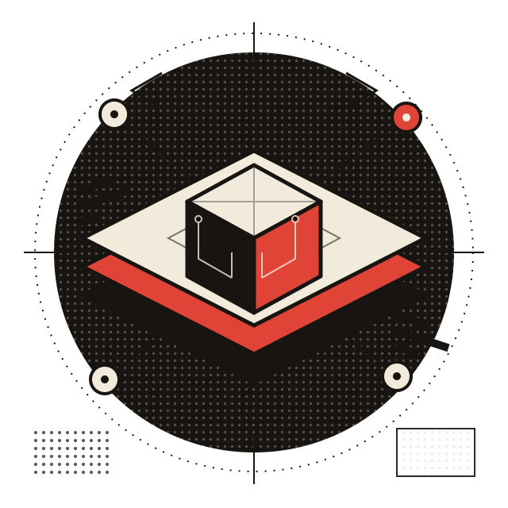
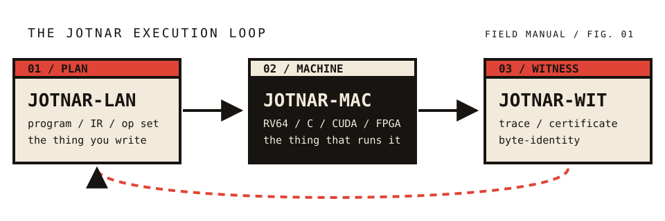
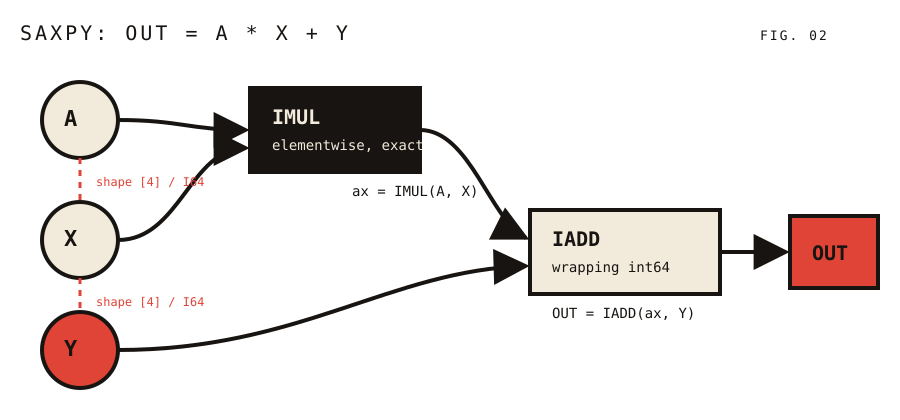
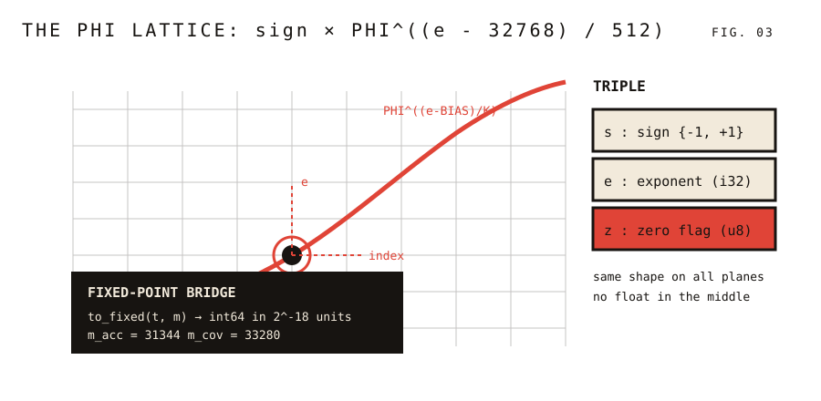
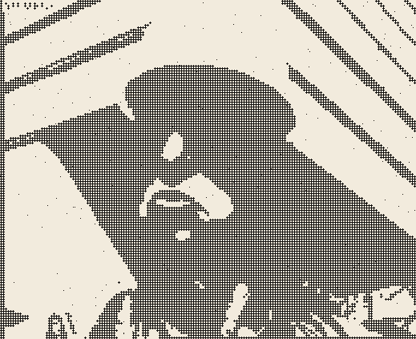
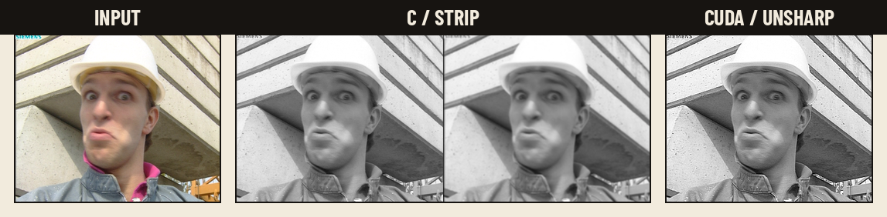
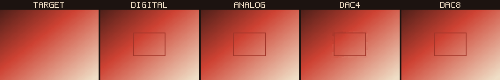
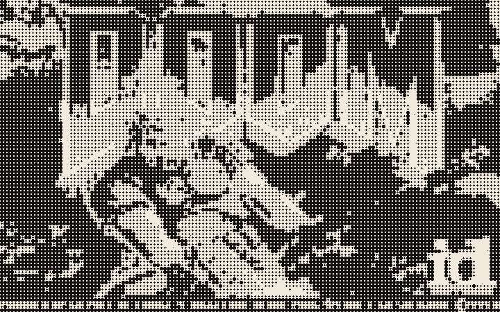
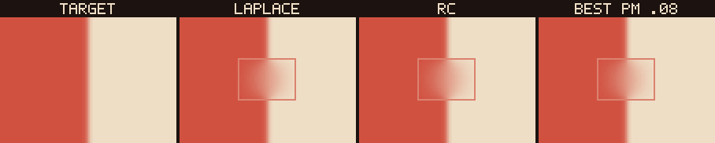
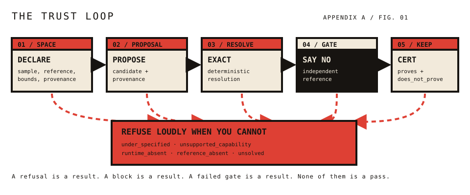

The Jotnar Working Group
The Python reference implementation
C99 · non-FPU · CUDA · Verilog · RV32IM
Differential parity, byte for byte
Anton · Barlow Condensed · Courier Prime · IBM Plex Mono · Stardos Stencil
Markdown, Paged.js, Chromium
This is a first rough draft of a manual for a language that is still being built. That is the point.
You are holding a field manual for Jotnar, a geometric assembly language for typed streams. It is not a tutorial for a finished product. It is a working document for a language that is being ported, tested, and argued with in public.
The code is real. The examples run. The edges are still sharp.
Jotnar is the family/stack. This manual documents the Rust implementation of Jotnar-LAN/DIG: a program format, a reference interpreter, and a set of emitters for C, integer-only C, CUDA, Verilog, and an RV32IM machine. The Python implementation is the oracle. This manual follows the same doctrine as the code: unknown mnemonics, arity mismatches, use-before-def, layout conflicts, and shape mismatches are errors, never silent guesses.
You need a terminal, a Rust toolchain, and a payload. The payload is a JSON file that binds names to typed streams. That is the whole boundary. There is no hidden state, no environment variable that changes arithmetic, no configuration file that silently rescales your data.
# build the reference implementation
cargo build --release
# check, verify, run
./target/release/jotnar check showcase/language/saxpy.asm
./target/release/jotnar verify showcase/language/saxpy.asm
./target/release/jotnar run showcase/language/saxpy.asm \
--payload /tmp/saxpy.json --outputs OUT
The payload for that run is small enough to read in one sitting:
{"streams":{
"A":{"kind":"I64","shape":[4],"data":["3","3","3","3"]},
"X":{"kind":"I64","shape":[4],"data":["1","2","3","4"]},
"Y":{"kind":"I64","shape":[4],"data":["10","20","30","40"]}
}}
The output is [13, 26, 39, 52]. If you got that, the rest of the book is elaboration.
| Need | For |
|---|---|
| Rust stable + Cargo | everything. |
gcc | the C backend, the native DOOM core, and the Verilog fixture. |
| CUDA toolkit + GPU | the CUDA target and GPU migration parity. |
| SDL2 runtime | the playable DOOM window. |
| DOOM image + WAD | live DOOM; run_doom_demo.sh falls back otherwise. |
| Python 3 + NumPy/Pillow | the parity harnesses against the Python oracle. |
jotnar-main + phi-core checkout | differential parity only; the demos run without them. |
run_doom_demo.sh is playable by default. --frames N is the headless path. If the external image or WAD is absent, the script falls back to the checked-in reference title and does not pretend the live run happened.
| Convention | Meaning |
|---|---|
UPPERCASE | A mnemonic, directive, or keyword. |
lowercase | A stream name chosen by the author. |
$VAR | A layout variable, unified by the assembler. |
KIND:GEOM | A concrete layout, such as T:HW or F:HWC. |
* | A wildcard layout: matches anything, binds nothing. |
→ | “produces” in a signature; 2 → 1 means two inputs, one output. |
| bold | A term defined in the glossary. |
# | A comment, to the end of the line. |
Jotnar listings are line-oriented. An assignment names one or more outputs on the left and one operation on the right. There are no registers, no stack, and no instruction pointer. The listing order is for the reader; the dataflow is the program.
Most languages try to be helpful when you make a mistake. Jotnar tries to be honest. A wrong arity is an error. A layout conflict is an error. A use-before-def is an error. A shape mismatch at run time is an error. An integer division by zero is an error. A float that is NaN or infinite where an integer is required is an error.
This is not masochism. It is the only way to keep a language that lowers to five different machines honest. If the frontend guesses, the emitters inherit the guess, and the witness is worthless.
If the assembler has to guess, the program is already wrong.
THE HOUSE RULE
The manual describes the parts that exist. The honest gaps are also part of the documentation:
jotnar-main device emitter and the CUDA fleet kernel used by the original DOOM GPU demo;live= resident loops), packed outputs, the codec ABI, CUDA graphs, tracing summaries, causal overrides, and the store-hook fused executor;calibrate, score, compose, stamp, zoo);The trust spine is not on this list. It is here: Appendix A. If you need one of the remaining gaps, you are reading the right draft at the wrong time. The next issue is the one to watch.
Jotnar is not one object. It is an execution loop: a program, a machine, and a witness.
Jotnar is a family of ideas about computation. The first idea is that a program can be a graph of named streams rather than a sequence of instructions that mutates a machine. The second is that the graph can be lowered to very different machines without changing its meaning. The third is that the result can be witnessed — compared, byte for byte, against an independent oracle.
Those three ideas have names. Use them.

| Aspect | What it is | What it is not |
|---|---|---|
| Jotnar-LAN | The language, IR, op set, and plan formats. The program. | A particular file extension or a Python module. |
| Jotnar-MAC | The machine or target: ISA, memory, lanes, OS, board. | The program itself. |
| Jotnar-WIT | The witness: trace, certificate, provenance, byte-identity. | A proof in the mathematical sense. |
When the distinction matters, write the suffix: Jotnar-LAN/DIG, Jotnar-MAC/DIG, Jotnar-WIT/DIG. When it does not, “Jotnar” means the family. Do not use “Jotnar” as the name of a project. Do not call a neural network “Jotnar.” The network is host code. Jotnar is the thing the host hands a plan to.
Storage and processing are different axes. Confusing them produces bad sentences and worse programs.
| Term | Axis | Meaning |
|---|---|---|
| Jotnar-FLD (Field) | State | The spatial values/lattice: depth, normals, IDs, provenance, phi-core state. The what. |
| Jotnar-MAP (Map) | Storage | A stored field/artifact: shape, dtype, layout, hash. Data at rest. |
| Refined Jotnar Map (RJM) | Storage + provenance | A map that passed a refinement stage, carrying an error bound and provenance. Still data. |
| Jotnar-VEC (Vector) | Processing | A costed, data-parallel batch of work. Compute in motion. |
| Jotnar-LANE | Resource | The execution resource a vector runs on. |
| Jotnar-PLN (Plan) | Binding | The executable artifact that binds maps (inputs/outputs) to vectors (work). |
| Jotnar-CERT | Witness | The output of executing a plan. |
Fields are state. Maps are stored. Vectors are executed. Plans bind them. Certificates witness the result.
THE DATA RULE
Bare “Jotnar code” is ambiguous. Require a flavor.
| Flavor | Meaning | Status |
|---|---|---|
| Jotnar-DIG | Digital: exact, bit-identical, C/CUDA/RV64, JMV1/JSW1. | Exists. |
| Jotnar-SIM | Simulated analog: DAC/RC/ADC, 2D field, digital twin. | Exists as experiments. |
| Jotnar-ANA | Physical analog: RC/crossbar/optical substrate, calibration and error bounds, no bit-exactness. | Does not exist. |
| Jotnar-HYB | Hybrid: digital control + analog kernel + digital readout/gate. | Not built; realistic target. |
The RC field in the analog work is Jotnar-SIM, not Jotnar-ANA. The board is Jotnar-MAC/DIG running a Jotnar-LAN/DIG plan and emitting a Jotnar-WIT/DIG certificate. Say that, or say less.
Because geometry is the part of the problem that does not change when the machine does. A depth map is still a depth map on a CPU, a GPU, a piece of FPGA fabric, or a simulated analog field. A layout like T:HW is a promise about shape and kind that survives lowering. An exact integer add is exact on every target. A stream is a name for a value that does not care where it lives.
The language is small on purpose. There are 94 mnemonics. The registry is the authority. Every mnemonic has an arity, a layout signature, and a reference implementation. If a target cannot lower a mnemonic, it says so. If a shape rule fails, the runtime says so. If an emitter has no pattern, it returns NoPattern, loudly.
Jotnar is not a project name. It is not the depth model, the JBU, the normal net, or the layer net; those are Atropos host code. It is not a file format, a Python package, or a particular GPU kernel. It is the stack: a program, a machine, and a witness. The names are load-bearing. Use them carefully and the rest of the system stays reviewable.
A Jotnar listing is a graph wearing the costume of a list. Learn to see the edges.
Start with the smallest useful program in the language:
# SAXPY: A*X + Y. A linear elementwise specimen.
IN A
IN X
IN Y
ax = IMUL(A, X)
OUT = IADD(ax, Y)
That is a complete listing. It declares three input streams, multiplies A by X elementwise, adds Y, and names the result OUT. The # lines are comments. The blank lines are for humans. The indentation is optional.
The important thing is not the order of the lines. It is the shape of the graph:

A, X, and Y are sources. IMUL consumes A and X and produces ax. IADD consumes ax and Y and produces OUT. There is no register named ax, no stack slot, and no instruction pointer. ax is a name for a stream. If you never use it again, it is still a stream; the interpreter keeps it because another instruction might.
The CLI has three verbs for a listing, and they answer different questions.
# Does it parse, expand, bind, and check arity?
jotnar check showcase/language/saxpy.asm
# Can the declared layouts be unified? What is the DEF interface?
jotnar verify showcase/language/saxpy.asm
# Run it against a payload.
jotnar run showcase/language/saxpy.asm \
--payload /tmp/saxpy.json --outputs OUT
check is syntax and registry binding. verify replays layout unification over declared layouts only. run executes the graph. They are deliberately separate: a program can bind and run without declaring a single layout, and a program can declare layouts that verify resolves even if the runtime shape checks would later reject the data.
For SAXPY, check reports 2 instructions, 3 inputs, 0 state stream(s). verify reports layouts resolved: 2/5 (0 error(s)) because only ax and OUT have layouts that can be resolved without declared input layouts. That is honest coverage reporting, not a failure.
run reads the payload, binds each declared input name to a typed stream, and executes the instructions in listing order. Because every instruction consumes only streams that already exist, listing order is a valid topological order. The interpreter does not need a scheduler. It does not need to know that ax comes before OUT; the assembler already rejected the listing if it did not.
The payload is ordinary JSON:
{"streams":{
"A":{"kind":"I64","shape":[4],"data":["3","3","3","3"]},
"X":{"kind":"I64","shape":[4],"data":["1","2","3","4"]},
"Y":{"kind":"I64","shape":[4],"data":["10","20","30","40"]}
}}
The output is a stream map in the same shape. With --outputs OUT, the CLI writes only the named stream:
{"streams":{"OUT":{"kind":"I64","shape":[4],
"data":["13","26","39","52"]}}}
Integer data is printed as strings so that values above 2^53 survive JSON. If you are reading this in a language with a native int64, you may parse them as numbers.
This is the mental model that matters. A register is a place. A stream is a name for a value. The language has no place. It has names, operations, and shapes.
That has consequences:
x = IADD(x, 1), you are rebinding the name, not mutating a register. The old value is still available to any instruction that already consumed it. (Some targets, notably Verilog, reject reassignment because hardware wires are not variables. More on that later.)H×W×C.The listing is a convenient serialization of a graph. If you can draw the graph, you can read the program.
THE GRAPH RULE
Try changing the arity:
IN A
IN X
OUT = IMUL(A)
The assembler refuses it. IMUL wants two inputs; you gave one. It does not insert a zero, broadcast a scalar, or hope for the best. The error names the operation and the source line. That is the contract.
The same contract applies to shapes. IADD requires its operands to have the same shape (or one to be a scalar literal). If you feed a [4] stream and a [3] stream, the runtime raises a shape mismatch. It does not truncate to the shorter one.
A stream is a name, a kind, a shape, and a layout. The first three are data; the fourth is a promise.
Every value in Jotnar is a stream. A stream has four pieces of identity:
The name is local to the listing. The kind and shape are checked at run time. The layout is checked at assembly time, when it is declared.
| Kind | Layout letter | Payload kind | What it holds |
|---|---|---|---|
F32 | F | F32 | 32-bit floats. |
F64 | F | F64 or F | 64-bit floats. |
I64 | I | I64 or I | Signed 64-bit integers. |
U8 | U8 | U8 | Unsigned bytes. |
Bool | I | Bool | Boolean masks. |
Triple | T | T | Three planes: sign, exponent, zero flag. |
None | UNKNOWN | None | Absence, used for history streams. |
F32 and F64 are distinct even though both use the layout letter F. The reference interpreter preserves the distinction where numpy does. A Bool stream is an integer mask at the layout level; SELECT and ISELECT accept it.
Triple is the important odd one. It is not a float, and it is not an integer. It is a scale-free value in the phi lattice. Chapter 08 is entirely about it.
| Shape | Meaning | Example layout |
|---|---|---|
[] | Scalar. | F:SCALAR |
[N] | Vector of length N. | F:SEQ, I:* |
[H, W] | 2D field or matrix. | T:HW, F:HW |
[H, W, C] | Image with channels. | F:HWC, U8:HWC |
[B, H, W, C] | Batch of images. | * |
[R, D] | Rows of features. | * |
Jotnar does not have a fixed list of shape names. HW, HWC, SEQ, and SCALAR are conventions used by the registry’s signatures. * matches any shape and binds nothing.
An input declaration may carry a layout:
IN rgb AS U8:HWC
IN depth AS T:HW
IN pos AS I:SEQ
The layout is a promise that the assembler uses for unification. It is not a conversion. If the payload delivers an F64 stream under a name declared U8:HWC, the runtime cross-check fails. The layout tells the assembler what to expect; the payload has to agree.
You can declare several names at once:
IN a, b AS T:SEQ
Each name gets the same layout. Duplicate input names are an error.
The payload is a JSON object with a streams map. Each stream has a kind, a shape, and data. The data key depends on the kind:
{
"streams": {
"x": {"kind":"F64","shape":[2,3],
"data":[0.1,0.2,0.3,0.4,0.5,0.6]},
"pos": {"kind":"I64","shape":[2],"data":["0","1"]},
"rgb": {"kind":"U8","shape":[2,2,3],"data":[0,1,2,3,4,5,6,7,8,9,10,11]},
"t": {"kind":"T","shape":[2,2],
"s":[1,-1,1,1],"e":[30000,31000,32000,33000],"z":[0,0,0,0]}
}
}
F32 and Bool are accepted too. Integer entries may be numbers or strings; strings preserve int64 values above 2^53. The output uses the same shape, with integer values encoded as strings for the same reason.
There is no implicit cast from F to I. F2I is an explicit operation, and it truncates toward zero, rejects NaN and infinity, and rejects values outside the int64 range. I2F is explicit too, and produces F64. If you want a different kind, ask for it.
The same is true of Bool and U8: they are distinct at the payload boundary even though many operations accept both as integer-like masks or bytes. The fail-loud doctrine is not only about errors. It is about making every conversion visible.
A layout is a small string that tells the assembler what a stream is shaped like — and lets it refuse the wrong graph before the runtime sees it.
A layout is a string of the form KIND:GEOM. KIND is one of F, T, I, U8, or UNKNOWN. GEOM is a shape convention such as SCALAR, SEQ, HW, or HWC. The full layout is a compact type for a stream.
F:SCALAR a float scalar
F:SEQ a float vector
F:HWC a float image with channels
T:HW a triple field
I:* an integer stream of any shape
U8:HWC a byte image
The registry gives every mnemonic a layout signature: one pattern per input, one per output. The assembler tries to unify the patterns against the actual layouts. If it cannot, the program is rejected. If it can, every output gets a resolved layout, or UNKNOWN when the information is not there.
| Pattern | Meaning |
|---|---|
* | Matches anything. Binds nothing. |
$VAR | Unifies a whole layout string. The same variable must get the same layout everywhere. |
$VAR^T | The transpose-derived form of $VAR. |
KIND:GEOM | A literal layout. Must match exactly. |
A simple elementwise operation uses one variable for all three positions:
ADD $A, $A -> $A
If you call ADD(T:HW, T:HW), the assembler binds $A = T:HW and gives the output T:HW. If you call ADD(T:HW, T:HWC), it reports a layout conflict: $A was already T:HW, and the second argument wants T:HWC.
TRANSPOSE is the clean example of a derived layout:
TRANSPOSE $A -> $A^T
If the input is T:HW, the output layout is T:HW^T. The actual operation swaps the last two dimensions, so the data is W×H; the ^T suffix records that the layout was derived by transposition rather than declared independently. If the input is UNKNOWN, the output stays UNKNOWN.
Some operations are specific about kind and geometry:
| Signature | Meaning |
|---|---|
U8:HWC -> F:HWC | SRGB_DECODE: bytes in, floats out, same image shape. |
F:HW -> T:HW | SQRT: float field in, triple field out. |
F:HW2 -> I:HW | STATIC: a two-channel flow becomes a one-channel mask. |
I:*, * -> I:* | IADD: an integer stream and a scalar-or-stream operand. |
The literal patterns are how the registry prevents nonsense like decoding sRGB from a triple field or computing a flow mask from a scalar.
MATMUL is declared as *, * -> *. It deliberately does not unify layouts, because matrix multiplication cares about the inner dimension, not the spelling of the geometry. The runtime has a separate shape rule:
a.shape[-1] == b.shape[-2]
If you forget the transpose, the runtime says:
inner dims [B,M,K] vs [B,N,K] (did you forget TRANSPOSE?)
That is the division of labor. The assembler handles the relationships it can see. The runtime handles the data-dependent ones. Both are allowed to fail loudly.
jotnar verify replays layout unification over declared layouts only. It prints a coverage line and, optionally, a DEF interface table.
$ jotnar verify showcase/language/saxpy.asm
layouts resolved: 2/5 (0 error(s))
Two of five streams have resolved layouts: ax and OUT. A, X, and Y have no declarations, so they are UNKNOWN. That is not an error; it is a coverage number. If you want a higher number, declare the inputs:
IN A AS I:SEQ
IN X AS I:SEQ
IN Y AS I:SEQ
Then verify can resolve all five.
A layout is a promise the assembler can check before the machine runs. A shape is a fact the runtime checks before the operation runs.
LAYOUT RULE
Consider:
IN a AS T:SEQ
IN b AS T:HW
OUT = ADD(a, b)
The signature of ADD is $A, $A -> $A. The first argument binds $A = T:SEQ. The second wants T:SEQ but gets T:HW. The assembler reports a layout conflict at the ADD line. It does not add a sequence to a field, and it does not pretend the field is a sequence.
That is the whole type system in one example. It is small, but it catches a large class of mistakes before a payload is ever loaded.
A language of graphs still needs a way to name a subgraph, reuse it, and loop over it. Jotnar keeps all three explicit.
Composition in Jotnar is textual, not runtime. DEF defines a subgraph. CALL expands it at the call site, with fresh names for every internal stream. IMPORT splices another file. REPEAT duplicates a body or emits a runtime loop. None of these features is a function call in the C sense. They are ways to build a larger graph from smaller graphs.
A definition names its formals, its outputs, and a body:
DEF twice(x) -> (y)
t = ADD(x, x)
y = ADD(t, x)
END
IN a
OUT = CALL twice(a)
The body is ordinary Jotnar. The formals are inputs to the subgraph. The declared outputs are the names the caller receives. The END closes the definition.
At the call site, every internal name is namespaced:
twice#1.t
twice#1.y
The suffix #1 is the call-site number. A second call gets #2, and so on. This is how two calls to the same definition can coexist in one flat program without colliding. The namespacing is visible in diagnostics, which is useful when a macro expands into a dozen instructions.
A definition cannot call itself, directly or indirectly. Recursion is a textual expansion loop, not a runtime stack, so the assembler rejects it:
recursive CALL: twice -> twice
A formal may declare a layout:
DEF f(x AS F:SEQ) -> (y)
y = x
END
The call site must satisfy it. If the actual argument is T:SEQ, the assembler reports a call-site layout violation. This is how a library can document the geometry it expects without relying on the caller’s payload.
IMPORT path splices another listing into the current expansion. The path is resolved relative to the listing directory, with a stdlib/ search path for bare names. --stdlib DIR overrides the search path.
IMPORT math.asm
Imports are textual and recursive. Cycles are detected and reported. Imported IN declarations stay UNKNOWN for layout purposes in the caller, matching the Python frontend. If you need a layout contract, put it on the DEF formal.
REPEAT N opens a block; END closes it. There are two behaviors.
Static unrolling. If N is an integer literal and the body contains no BREAK, the assembler copies the body N times. Names are not renamed between copies, so a reassignment in copy 2 replaces the name from copy 1. That is deliberate: it is how a sequence of updates is written.
IN x
REPEAT 3
x = IADD(x, 1)
END
OUT = IADD(x, 0)
Runtime loop. If the body contains a BREAK, or if N is a stream name rather than a literal, the assembler keeps a loop marker and the interpreter iterates. BREAK cond exits the innermost loop when the first element of cond is nonzero.
IN x
IN limit
REPEAT limit
x = IADD(x, 1)
BREAK ISUB(x, limit)
END
BREAK outside a REPEAT is an error. END without REPEAT is an error. A nested loop must be closed before its parent.
STATE marks a stream as carried across host iterations. It must also be declared IN (the seed) and assigned as an output (the carry). The CLI’s jotnar repeat command threads the state from one iteration to the next.
IN x
STATE x
REPEAT 3
x = IADD(x, 1)
END
OUT = IADD(x, 0)
jotnar repeat expects a payload of the form {"iterations":[{...}, {...}]}. Non-state inputs are read from each iteration; state streams seed from iteration 0 and carry forward.
RANGE name lo hi is parsed and bounds-checked. It is an annotation for host planners and readers; the reference interpreter does not emit an instruction for it.
CONFIG key value sets a program-wide constant. The registry reads these through typed helpers. The important ones:
| Key | Used by | Default |
|---|---|---|
m_acc | accumulation scale | 31344 |
m_cov | coverage/output scale | 33280 |
beta | BETA, BETA_V5, attention mask | 0.5 |
beta_b | TBETA | falls back to beta |
eps_rms / eps_rms_c | RMSNORM | 4514 counts |
eps_ln / eps_ln_c | LAYERNORM | 4514 counts |
rope_base | ROTARY, ROPE | 10000.0 |
CONFIG is program-global and must appear outside DEF. It is not a runtime knob that changes per invocation; it is part of the program’s arithmetic contract.
| Directive | Scope | Effect |
|---|---|---|
IN name [AS layout] | global | Declares an input stream. |
OUT = ... | any | Names an output stream. |
DEF name(args) -> (outs) | global | Defines a reusable subgraph. |
CALL name(args) | any | Expands a definition at the call site. |
END | block | Closes DEF or REPEAT. |
IMPORT path | global | Splices another listing. |
REPEAT N | any | Unrolls or loops a body. |
BREAK cond | loop | Exits the innermost loop. |
STATE name | global | Marks a stream as host-carried. |
RANGE name lo hi | global | Annotates a numeric range. |
CONFIG key value | global | Sets a program-wide constant. |
# comment | any | Ignored to end of line. |
COMPOSITION RULE
DEFnames a graph.CALLpastes a fresh copy.REPEATcopies or loops. Nothing is hidden, and nothing is recursive.
The integer family is the floor of the language. It wraps, it divides, it compares, and it never guesses.
Jotnar’s integer streams are signed 64-bit values. Addition, subtraction, and multiplication wrap modulo 2^64. That is not an accident or a platform detail; it is the contract. If you need saturation, use SADD. If you need unsigned division, use IDIVU. If you need a different width, mask with IAND.
| Mnemonic | Signature | Behavior |
|---|---|---|
IADD | I:*, * -> I:* | Wrapping add. |
ISUB | I:*, * -> I:* | Wrapping subtract. |
IMUL | I:*, * -> I:* | Wrapping multiply. |
IMAD | I:*, *, * -> I:* | a*b + c, wrapping. |
SADD | I:*, * -> I:* | Saturating add. |
IMAX | I:*, * -> I:* | Elementwise maximum. |
IDIV | I:*, * -> I:* | Truncating signed division. |
IMOD | I:*, * -> I:* | Remainder of truncating division. |
IDIVU | I:*, * -> I:* | Unsigned 64-bit division. |
IMODU | I:*, * -> I:* | Unsigned 64-bit remainder. |
IDIV and IMOD follow C’s truncation toward zero, not Python’s floor division. They raise on division by zero and on INT64_MIN / -1, which is unrepresentable. IDIVU and IMODU reinterpret the operands as unsigned 64-bit values before dividing.
| Mnemonic | Signature | Behavior |
|---|---|---|
IAND | I:*, * -> I:* | Bitwise and. |
IOR | I:*, * -> I:* | Bitwise or. |
IXOR | I:*, * -> I:* | Bitwise exclusive-or. |
ISHL | I:*, F:SCALAR -> I:* | Logical left shift by 0..63. |
ISHR | I:*, F:SCALAR -> I:* | Logical right shift by 0..63. |
ISAR | I:*, * -> I:* | Arithmetic right shift by 0..63. |
ISHL and ISHR take a scalar shift amount. ISAR takes a stream or scalar. All three reject shift counts outside 0..=63. There is no “shift by 64 means zero” rule; that is a bug waiting to happen.
| Mnemonic | Signature | Behavior |
|---|---|---|
IEQ | I:*, * -> I:* | 1 if equal, else 0. |
ILT | I:*, * -> I:* | 1 if a < b, else 0. |
ISELECT | I:*, *, * -> I:* | mask != 0 ? a : b. |
F2I | F:* -> I:* | Float to int, truncating toward zero. |
I2F | I:* -> F:* | Integer to F64. |
ISELECT is the branch-like primitive. It is not a branch; both arms are computed, and the mask chooses elementwise. That makes it safe for data-dependent control flow in a graph and easy to lower to hardware.
# A two-way select. One condition, two data inputs, no arithmetic.
IN C
IN A
IN B
OUT = ISELECT(C, A, B)
F2I is strict. It rejects NaN, Inf, values outside the int64 range, and triples. It truncates toward zero, so -3.9 becomes -3. If you need rounding, do it explicitly before the conversion.
IN a
IN b
s = IADD(a, b)
t = IMUL(s, 3)
OUT = IAND(t, 255)
This is a wrapping add, a wrapping multiply by three, and an 8-bit mask. If a and b are bytes, s can carry into bit 8 and above; IAND keeps the low byte. That is the exact idiom used by the CPU8 listing in Chapter 16.
If you want a different width, mask it. If you want saturation, ask for it. If you want a conversion, name it.
INTEGER RULE
Because floats are not a superset of integers. An int64 above 2^53 cannot be represented exactly in an F64. A checksum, an address, a byte count, or a hash is not a float. Jotnar keeps the integer path exact all the way to the emitter: the C target uses uint64_t arithmetic for wrapping ops, and the non-FPU target never touches a float for integer work.
The integer family is also the substrate for the CPU and byte chapters. Once you can add, mask, shift, compare, and select, you can build a machine.
Float at the edge; exact in the middle. A triple is a value that carries its own scale.
A triple is three planes with the same shape:
s : sign int8, -1 or +1
e : exponent int32, biased by 32768
z : zero flag uint8, 1 for exact zero
The value is reconstructed as:
value = s * PHI^((e - 32768) / 512)
where PHI = 1.618033988749895 and the exponent step is 1/512 of a phi-log unit. The zero flag is separate because zero has no sign and no exponent; trying to encode it as one would lose the distinction between “zero” and “very small.”

Floating point has a fixed number of significand bits. Every operation rounds. For a pipeline that composes dozens of operations, the rounding order matters, and different SIMD widths can produce different last bits. Jotnar’s triple path is designed to make the arithmetic integer-only in the middle and to push float to the sensor boundary and the display boundary.
The lattice is not a floating-point format. It is a logarithmic encoding with a shared, frozen set of lookup tables. Multiplication and division become exponent adds and subtracts; addition and subtraction go through a fixed-point bridge. The result is deterministic and cheap to implement in integer hardware.
Most triple operations do not work directly on (s,e,z) pairs. They convert to a fixed-point integer at a chosen scale m, do integer arithmetic, and convert back. The bridge is:
to_fixed(t, m) -> int64 in 2^-18 units
from_fixed(q, m) -> Triple
The scale m is a bias value, not a floating-point exponent. Two scales matter:
| Config | Default | Used for |
|---|---|---|
m_acc | 31344 | accumulation, convolution, matmul |
m_cov | 33280 | coverage, output, most elementwise ops |
Set them with CONFIG:
CONFIG m_acc 41200
CONFIG m_cov 41200
The bridge uses frozen LUTs for the fractional part and a fine LUT for the exponent reconstruction. Rounding is round-half-to-even, matching numpy. The emitters bake the same tables, which is why the non-FPU target can reproduce the triple path without a single float or double.
The frozen triple is a pure log-φ value: s · φ^((e−32768)/512). For
some models that re-snap every arithmetic result to the K=512 lattice is
the precision limit. T2 adds an explicit binary residual, still
integer-only:
v = z ? 0 : s · φ^((e−32768)/512) · (1 + m / 2^M)
CONFIG t2 24
The four planes are s (int8), e (int32), m (int32 residual), and
z (uint8). Multiplication adds the φ exponents and multiplies the
mantissas; the m_a·m_b/2^M term is the φ-vs-power-of-2 correction.
Addition aligns to the larger exponent and uses the fixed-point bridge.
T2 is opt-in. CONFIG threads N (1..=256) parallelizes T2 MATMUL
rows with OpenMP; the per-row accumulation order is unchanged, so the
result is bit-identical. Listings without CONFIG t2 emit the frozen T
path byte-for-byte. On the non-FPU target, T2 currently lowers MUL,
SQUARE, ADD, SUB, MATMUL, LAYERNORM, GELU, SOFTMAX,
SOFTMAX_WIDE, TRANSPOSE, and CONCAT; other ops refuse with a typed
Unimplemented error rather than falling back to float. The
fixed-point bridge uses a u128 magnitude; i64::MIN/i64::MAX
saturate at the high T2 exponent (the documented overflow boundary)
instead of wrapping. T2 also lowers CONV2D, DECONV2D, RESIZE2D,
RELU, and the exact SLICE/RESHAPE2/RESHAPE3 moves: convolutions
use per-output block-floating accumulators, resize uses integer
Q=2^24 bilinear weights, and ReLU is a sign/zero move. See docs/T2_PHI_FLOAT.md for the format, rounding, and gates.
| Mnemonic | Signature | Behavior |
|---|---|---|
ADD | $A, $A -> $A | Elementwise add through the fixed-point bridge. |
SUB | $A, $A -> $A | Elementwise subtract. |
MUL | $A, $A -> $A | Elementwise multiply. |
DIV | $A, $A -> $A | Elementwise divide. |
SQUARE | $A -> $A | Elementwise square. |
SQRT | F:HW -> T:HW | Square root, emitted as triples. |
SIGMOID | $A -> $A | Logistic sigmoid through the sigmoid LUT. |
CLIP | $A, F:SCALAR, F:SCALAR -> $A | Clamp to [lo, hi]. |
RESCALE | $A, F:SCALAR -> $A | Change the fixed-point scale. |
GT | $A, $A -> I:* | Elementwise greater-than, returning a mask. |
SELECT | I:*, $A, $A -> $A | Masked select. |
MUL and DIV are not IEEE operations. They are lattice operations: exponents combine, signs multiply, and the zero flag dominates. That is why the result can be exact in a way a float multiply is not.
CONFIG m_cov 33280
IN a AS T:HW
IN b AS T:HW
IN mask AS I:HW
sum = ADD(a, b)
sq = SQUARE(a)
gate = GT(a, b)
out = SELECT(mask, sq, sum)
OUT = CLIP(out, 0.0, 1.0)
Every step is elementwise. GT produces an integer mask; SELECT chooses between two triple streams; CLIP stays in the lattice. No float appears in the listing. The emitters can lower this to integer-only C, CUDA FP32, or hardware, depending on the target.
Float at the edge; exact in the middle. The triple is how the middle stays exact.
LATTICE RULE
A triple stream is three arrays of the same shape. In JSON:
{"kind":"T","shape":[2,2],
"s":[1,-1,1,1],
"e":[30000,31000,32000,33000],
"z":[0,0,0,0]}
The first element is positive with exponent 30000; the second is negative with exponent 31000; and so on. All four are non-zero. If z were 1, the value would be exactly zero regardless of s and e.
That is the whole representation. It is small, it is integer, and it is the same on every machine that Jotnar targets.
Matrix multiply, norms, softmax, attention, and the small set of moves that make a transformer a graph.
The linear-algebra family is where the triple path earns its keep. A matmul is a long chain of multiplies and adds; if each one rounded independently, the result would depend on the order of accumulation. Jotnar accumulates in fixed-point integers at m_acc, then returns to the lattice at m_cov. The order is explicit, and the emitters preserve it.
| Mnemonic | Signature | Behavior |
|---|---|---|
MATMUL | *, * -> * | 2D matrix multiply over triples. |
BATCH_MATMUL | *, * -> * | Batched matmul over leading dimensions. |
BMMV | *13 -> * | Fused batched matrix-vector kernel with explicit strides. |
The runtime checks the inner dimensions:
a.shape[-1] == b.shape[-2]
The classic mistake is a missing transpose. Jotnar names it:
inner dims [B,M,K] vs [B,N,K] (did you forget TRANSPOSE?)
A 2×2 multiply is small enough to read:
# 2x2 matrix multiply. Four dot products with a shared operand graph.
IN a00
IN a01
IN a10
IN a11
IN b00
IN b01
IN b10
IN b11
t00 = IMUL(a00, b00)
t01 = IMUL(a01, b10)
c00 = IADD(t00, t01)
t10 = IMUL(a10, b00)
t11 = IMUL(a11, b10)
c10 = IADD(t10, t11)
t02 = IMUL(a00, b01)
t03 = IMUL(a01, b11)
c01 = IADD(t02, t03)
t12 = IMUL(a10, b01)
t13 = IMUL(a11, b11)
c11 = IADD(t12, t13)
The listing is a graph: t00 and t01 feed c00; t10 and t11 feed c10; and the second column reuses a00, a01, a10, a11. The order is chosen for reading, not for a machine’s pipeline. An emitter is free to schedule the independent products in any order that preserves the dataflow.
| Mnemonic | Signature | Behavior |
|---|---|---|
RMSNORM | $X, $W -> $X | RMSNorm over the last axis. |
LAYERNORM | $X, $W, $W -> $X | LayerNorm over the last axis; 2D input. |
SILU | $A -> $A | x * sigmoid(x). |
GELU | $A -> $A | GELU through frozen LUTs. |
SIGMOID | $A -> $A | Logistic sigmoid. |
SWIGLU | $A, F:SCALAR -> $A | silu(gate) * up; the input is 2*inter wide. |
SCAN | $X, $X, $X -> $X | Recurrence step h*abar + bx. |
RMSNORM and LAYERNORM take their epsilon from CONFIG (eps_rms, eps_ln) or from explicit count values (eps_rms_c, eps_ln_c). The default is 4514 counts at the coverage scale. That is a deliberate, frozen calibration, not a magic float.
| Mnemonic | Signature | Behavior |
|---|---|---|
SOFTMAX | $A -> $A | Softmax over the last axis at BIAS scale. |
SOFTMAX_WIDE | $A -> $A | Softmax with the wide fixed-point range. |
TSHIFT | $A -> $A | Subtract the per-row maximum. |
ATTN | 8 args -> $A | Multi-head attention with a mask. |
ROTARY | $X, * -> $X | Rotary embedding over triple pairs. |
ROPE | $A, *, F:SCALAR, F:SCALAR -> $A | Float RoPE over (rows, heads*head_dim). |
ARGMAX | $A, F:SCALAR -> I:* | Index of the maximum along an axis. |
TOPK | $A, F:SCALAR -> $A, I:* | Top-k values and indices. |
SOFTMAX requires BIAS-scale counts. If you feed it a stream at a different scale, it refuses. TSHIFT is the numerical-stability step: subtract the row maximum before exponentiating. The exp itself uses a frozen LUT, not exp() from libm.
ATTN takes query, key, value, a mask, and four integers: number of heads, number of KV heads, head dimension, and sequence length. The mask is (per, S), where per = nh / nkv. It applies the mask by writing a large negative value into the scores, not by branching.
A transformer block is not a single mnemonic. It is a graph:
RMSNORM or LAYERNORM on the input.MATMUL with the Q, K, V weights.ROTARY or ROPE on Q and K.ATTN with the mask.MATMUL with the output projection.ADD.SWIGLU or GELU.ADD.Every step is an ordinary stream operation. There is no “transformer” op. That is the point: the model is a graph, and the graph is visible.
The listing fixes the dataflow, not the schedule. The emitter may reorder independent work; it may not change the accumulation order inside a matmul.
SCHEDULING RULE
The linalg path depends on a small set of shape moves:
| Mnemonic | Signature | Behavior |
|---|---|---|
TRANSPOSE | $A -> $A^T | Swap the last two dimensions. |
RESHAPE2 | *, F:SCALAR, F:SCALAR -> * | Reshape to two dimensions. |
RESHAPE3 | *, F:SCALAR, F:SCALAR, F:SCALAR -> * | Reshape to three dimensions. |
PERMUTE3 | *, F:SCALAR, F:SCALAR, F:SCALAR -> * | Permute three dimensions. |
CONCAT | $A, $A, F:SCALAR -> $A | Concatenate along an axis. |
SLICE | $A, F:SCALAR, F:SCALAR, F:SCALAR -> $A | Slice along an axis. |
GATHER | *, I:* -> * | Gather rows by index. |
SCATTER | $A, $A, I:* -> $A | Scatter values into a copy. |
These are not cosmetic. A reshape changes the stride interpretation; a transpose changes the layout; a concat changes the axis length. The runtime checks what it can, and the emitters infer static shapes before lowering. If a shape is dynamic where the C emitter needs a constant, the emitter says so instead of guessing.
An image is a stream with channels. A field is a stream with a geometry. The image family is where the two meet.
The image family works on H×W and H×W×C streams. The usual pipeline is:
U8:HWC --SRGB_DECODE--> F:HWC --LUMA--> F:HW
F:HW --SQRT--> T:HW --SPLAT_BLUR--> T:HW + T:HW
T:HW --BETA--> T:HW --GAIN--> F:HWC
F:HWC --SRGB_ENCODE--> U8:HWC
Every arrow is a stream. Every stage can be inspected, replaced, or run on a different target. There is no hidden image object.
| Mnemonic | Signature | Behavior |
|---|---|---|
SRGB_DECODE | U8:HWC -> F:HWC | Normalize bytes to [0,1], then pow(2.2). |
SRGB_ENCODE | F:HWC -> U8:HWC | pow(1/2.2), scale to 0..255, clamp. |
LUMA | F:HWC -> F:HW | Rec.709 weights: 0.2126, 0.7152, 0.0722. |
GAIN | F:HWC, F:HW, T:HW -> F:HWC | Coherence-gated gain. |
sRGB is not a linear-light space. Decoding before filtering and encoding after is the difference between a blur that looks right and a blur that looks muddy. The gamma is a fixed 2.2 approximation, not the piecewise sRGB curve; that is the frozen contract.
| Mnemonic | Signature | Behavior |
|---|---|---|
GAUSS | $A, F:SCALAR, F:SCALAR -> $A | Gaussian blur with radius and sigma. |
ISO_BLUR | T:HW -> T:HW | Fixed 5×5 Gaussian (radius 2, sigma 1). |
CONV | *, * -> * | 2D convolution with an explicit kernel. |
CONV2D | *, *, *, F:SCALAR, F:SCALAR -> * | Multi-channel HWC convolution with stride, padding, and bias. |
DECONV | *, *, F:SCALAR, F:SCALAR -> * | Transposed convolution with stride and padding. |
DECONV2D | *, *, *, F:SCALAR, F:SCALAR -> * | Multi-channel HWC transposed convolution with stride, padding, and bias. |
INTERP | *, F:SCALAR, F:SCALAR -> * | Bilinear resize by dyadic scales. |
RESIZE2D | *, F:SCALAR, F:SCALAR, F:SCALAR -> * | Bilinear resize to an explicit size with an align_corners flag. |
POOLAVG | * -> * | Global average pool over H,W; returns (C). |
PRELU | $A, $A -> $A | PReLU with scalar or per-channel slope. |
INTERP only accepts dyadic scales (powers of two). A non-dyadic scale is a lowering error, not a silent approximation. That is a deliberate constraint: it keeps the fixed-point coordinate math exact.
SPLAT_BLUR is the big one. It computes a structure tensor (Sobel gradients, then a Gaussian window), derives coherence, buckets the local orientation, and blends several oriented splats. It returns two streams: the filtered image and the coherence field.
| Mnemonic | Signature | Behavior |
|---|---|---|
SPLAT_BLUR | T:HW -> T:HW, T:HW | Structure-tensor splat blur; image + coherence. |
BETA | $A -> $A | Fill with the scalar beta. |
BETA_V5 | T:HW, T:HW -> T:HW | Beta field v5 from depth and coherence. |
MIXDYAD | T:HW, T:HW, I:HW -> T:HW | Blend current and history under a mask. |
WARP | T:HW, F:HW2 -> T:HW | Bilinear warp by a flow field. |
STATIC | F:HW2 -> I:HW | Mask true where flow magnitude is zero. |
Coherence is a number in [0,1]: how strongly the local gradient points in one direction. The beta field uses it to decide how much to trust the current estimate versus the history. BETA_V5 adds a depth term. MIXDYAD blends under a mask, and WARP resamples the previous field by a flow.

The image demo runs one 43-op geometric listing through C, non-FPU, and CUDA. It is the shortest way to see the same graph on three machines:
cargo run --release --bin jotnar-demo-img -- \
--input samples/input_example.png --gallery gallery
The gallery contains the C output, the non-FPU output, and the CUDA output. The point is not that the images are pixel-identical across every target; floats can differ in the last ulp. The point is that the graph is the same, the shapes are the same, and the exact moves are exact.
Because the image path is where the language’s constraints become visible. You cannot blur a U8:HWC stream directly; you decode first. You cannot resize by an arbitrary scale; you use a dyadic scale or you get an error. You cannot treat a triple as a float; you decode at the boundary. The image family is a stress test for the type system, and it passes by refusing the wrong graph. The field-note version of the 43-op run is Chapter 17.
Decode at the edge, filter in the middle, encode at the edge. The middle is where the exactness lives.
IMAGE RULE
A byte stream is an integer stream with a small range. Everything else is indexing, checking, and refusing to read past the end.
The byte family treats a 1D integer stream as a sequence of bytes. There is no separate bytes value at the language level; a byte is an I64 in [0,255] (or a U8 at the payload boundary). The operations are explicit about bounds, because a decoder that silently reads past the end is a security bug with a nicer name.
| Mnemonic | Signature | Behavior |
|---|---|---|
IWINDOW | I:*, *, F:SCALAR -> I:* | Slice [start, start+len). |
IFIND | I:*, I:* -> I:* | First index of a pattern; -1 if absent. |
IGATHER1 | I:*, I:* -> I:* | Gather from a 1D table by indices. |
IASSEMBLE | I:*, F:SCALAR, F:SCALAR -> I:* | Assemble 1..8 little-endian bytes into an integer. |
ISUM | I:*, F:SCALAR, F:SCALAR -> I:* | Sum a slice. |
ISCATTER1 | I:*, I:*, I:* -> I:* | Scatter values into a 1D copy at indices. |
ICRC32 | I:* -> I:* | CRC-32 (IEEE) over bytes. |
ICRC32C | I:*, I:* -> I:* | CRC-32C with an explicit seed. |
IVARINT | I:*, * -> I:*, I:* | Decode a varint; returns value and bytes consumed. |
IINFLATE | I:*, F:SCALAR -> I:* | Raw DEFLATE decode with an expected size. |
Every slice checks start >= 0, len >= 0, and start + len <= len(x). Every gather checks each index against the table length. Every scatter checks each index against the destination. IVARINT reports truncation; IINFLATE reports a bad stream; IFIND returns -1 rather than throwing, because “not found” is a normal result.
ICRC32 computes the IEEE CRC-32 of a byte stream, with the usual initial value and final XOR:
IN bytes
OUT = ICRC32(bytes)
ICRC32C takes an explicit seed, so a protocol can continue a checksum across chunks:
IN chunk
IN seed
OUT = ICRC32C(chunk, seed)
The polynomial is part of the mnemonic, not a configuration knob. If you need a different CRC, write it with the integer family; the byte family stays small on purpose.
IVARINT decodes a base-128 varint at a start index and returns two streams: the value and the number of bytes consumed. That second output is what makes it composable: you can advance the cursor without guessing how long the encoding was.
IN data
value, used = IVARINT(data, 0)
next = IADD(used, 0)
IINFLATE decodes a raw DEFLATE stream with an expected output size. The expected size is a scalar, not a buffer size hint; the decoder allocates exactly that many bytes and fails if the stream would produce a different count. That keeps the operation deterministic and avoids a class of decompression bombs.
The container operations are shape moves, not byte moves:
| Mnemonic | Signature | Behavior |
|---|---|---|
GATHER | *, I:* -> * | Gather rows by index. |
GATHER3 | *, I:*, I:* -> * | Gather from a 3D table by i and j. |
SCATTER | $A, $A, I:* -> $A | Scatter values into a copy. |
SLICE | $A, F:SCALAR, F:SCALAR, F:SCALAR -> $A | Slice along an axis. |
CONCAT | $A, $A, F:SCALAR -> $A | Concatenate along an axis. |
SELECT | I:*, $A, $A -> $A | Masked select. |
GT | $A, $A -> I:* | Greater-than mask. |
GATHER checks that the index vector is in range for the first axis. GATHER3 checks that i and j are 1D, the same length, and in range for the table’s first two axes. SCATTER writes into a copy; it does not mutate the input stream.
The Futhark demo uses IWINDOW to slide a four-character window over a word, IXOR/IMUL/IADD to compute a fingerprint, and IGATHER1 to read a sorted lexicon table. The DOOM runner uses the same byte family for a compiled RV32IM image: fetch bytes, assemble instructions, decode fields, and checksum frames.
Neither demo needed a new byte type. The integer family plus bounds checks was enough.
A byte is an integer with a small range. A decoder is a graph with a bounds check. Never confuse the two.
BYTE RULE
The registry is the authority. Every mnemonic has an arity, a signature, a family, and a reference implementation. If it is not here, it is not in the language.
This is the full register. It is generated from the same data the manual uses for the per-family chapters, and it is checked against the Rust registry’s 94 entries.
Read the columns as follows:
* in a signature means “any layout.”$A is a unified variable; * binds nothing; KIND:GEOM is a literal.| Mnemonic | In→Out | Signature | What it does |
|---|---|---|---|
| IADD | 2→1 | I:*, * -> I:* | Wrapping signed 64-bit addition. |
| SADD | 2→1 | I:*, * -> I:* | Saturating signed 64-bit addition. |
| IMAX | 2→1 | I:*, * -> I:* | Elementwise maximum. |
| ISUB | 2→1 | I:*, * -> I:* | Wrapping signed 64-bit subtraction. |
| IMUL | 2→1 | I:*, * -> I:* | Wrapping signed 64-bit multiplication. |
| IMAD | 3→1 | I:*, *, * -> I:* | Fused multiply-add: a*b + c, wrapping. |
| IDIV | 2→1 | I:*, * -> I:* | Truncating signed division; zero and MIN/-1 are errors. |
| IMOD | 2→1 | I:*, * -> I:* | Remainder from truncating signed division. |
| IDIVU | 2→1 | I:*, * -> I:* | Unsigned 64-bit division. |
| IMODU | 2→1 | I:*, * -> I:* | Unsigned 64-bit remainder. |
| IXOR | 2→1 | I:*, * -> I:* | Bitwise exclusive-or. |
| IAND | 2→1 | I:*, * -> I:* | Bitwise and. |
| IOR | 2→1 | I:*, * -> I:* | Bitwise or. |
| ISAR | 2→1 | I:*, * -> I:* | Arithmetic right shift by 0..63. |
| IEQ | 2→1 | I:*, * -> I:* | 1 when equal, else 0. |
| ILT | 2→1 | I:*, * -> I:* | 1 when a < b, else 0. |
| ISELECT | 3→1 | I:*, *, * -> I:* | Masked select: mask != 0 ? a : b. |
| ISHL | 2→1 | I:*, F:SCALAR -> I:* | Logical left shift by a scalar 0..63. |
| ISHR | 2→1 | I:*, F:SCALAR -> I:* | Logical right shift by a scalar 0..63. |
| F2I | 1→1 | F:* -> I:* | Float to integer, truncating toward zero. |
| I2F | 1→1 | I:* -> F:* | Integer to F64. |
| T2I | 1→1 | T:* -> I:* | Decode a phi-ladder triple stream to int64, round half away from zero. |
| IGET | 2→1 | I:*, F:SCALAR -> I:SCALAR | Extract one integer element as a scalar stream; index must be a literal in range. |
| IMATMUL | 2→1 | I:*, I:* -> I:* | Exact 2D integer matrix multiply [M,K]*[K,N] -> [M,N], 64-bit wrap. |
| IREDUCE_SUM | 1→1 | I:* -> I:SCALAR | Exact sum of every element of an integer stream; output is a scalar. |
| Mnemonic | In→Out | Signature | What it does |
|---|---|---|---|
| MATMUL | 2→1 | *, * -> * | 2D matrix multiply with fixed-point accumulation. |
| BATCH_MATMUL | 2→1 | *, * -> * | Batched matmul over leading batch dimensions. |
| SOFTMAX | 1→1 | $A -> $A | Softmax over the last axis at BIAS scale. |
| SOFTMAX_WIDE | 1→1 | $A -> $A | Softmax with the wide fixed-point range. |
| TSHIFT | 1→1 | $A -> $A | Subtract the per-row maximum (softmax stabilization). |
| RMSNORM | 2→1 | $X, $W -> $X | RMSNorm over the last axis with a weight vector. |
| LAYERNORM | 3→1 | $X, $W, $W -> $X | LayerNorm over the last axis (2D input). |
| SILU | 1→1 | $A -> $A | SiLU activation: x * sigmoid(x). |
| GELU | 1→1 | $A -> $A | GELU activation through frozen LUTs. |
| RELU | 1→1 | $A -> $A | Rectified linear unit: max(x, 0). |
| SCAN | 3→1 | $X, $X, $X -> $X | Recurrence step: h * abar + bx. |
| ROTARY | 2→1 | $X, * -> $X | Rotary embedding over triple pairs by position. |
| ROPE | 4→1 | $A, *, F:SCALAR, F:SCALAR -> $A | Float RoPE over (rows, heads * head_dim). |
| SWIGLU | 2→1 | $A, F:SCALAR -> $A | Gated MLP: silu(gate) * up. |
| ATTN | 8→1 | $A,$A,$A,I:*,F:SCALAR,F:SCALAR,F:SCALAR,F:SCALAR -> $A | Multi-head attention with a causal/validity mask. |
| BMMV | 13→1 | *13 -> * | Fused batched matrix-vector kernel with explicit strides. |
| Mnemonic | In→Out | Signature | What it does |
|---|---|---|---|
| TRANSPOSE | 1→1 | $A -> $A^T | Swap the last two dimensions; layout becomes ^T. |
| GAUSS | 3→1 | $A, F:SCALAR, F:SCALAR -> $A | Gaussian blur with radius and sigma. |
| RESHAPE2 | 3→1 | *, F:SCALAR, F:SCALAR -> * | Reshape to two dimensions. |
| RESHAPE3 | 4→1 | *, F:SCALAR, F:SCALAR, F:SCALAR -> * | Reshape to three dimensions. |
| PERMUTE3 | 4→1 | *, F:SCALAR, F:SCALAR, F:SCALAR -> * | Permute three dimensions. |
| SELECT | 3→1 | I:*, $A, $A -> $A | Elementwise select: mask != 0 ? a : b. |
| CONCAT | 3→1 | $A, $A, F:SCALAR -> $A | Concatenate two streams along an axis. |
| ARGMAX | 2→1 | $A, F:SCALAR -> I:* | Index of the maximum along an axis. |
| TOPK | 2→2 | $A, F:SCALAR -> $A, I:* | Top-k values and indices along the last axis. |
| GT | 2→1 | $A, $A -> I:* | Elementwise greater-than, returning an integer mask. |
| SLICE | 4→1 | $A, F:SCALAR, F:SCALAR, F:SCALAR -> $A | Slice along an axis from start to end. |
| CLIP | 3→1 | $A, F:SCALAR, F:SCALAR -> $A | Clamp every value into [lo, hi]. |
| DIV | 2→1 | $A, $A -> $A | Elementwise division. |
| SIGMOID | 1→1 | $A -> $A | Logistic sigmoid. |
| RESCALE | 2→1 | $A, F:SCALAR -> $A | Rescale triples to a new fixed-point scale. |
| GATHER | 2→1 | *, I:* -> * | Gather rows by an index vector. |
| GATHER3 | 3→1 | *, I:*, I:* -> * | Gather from a 3D table by i/j index vectors. |
| SCATTER | 3→1 | $A, $A, I:* -> $A | Scatter values into a copy at the given indices. |
| PRELU | 2→1 | $A, $A -> $A | PReLU with a scalar or per-channel slope. |
| POOLAVG | 1→1 | * -> * | Global average pool over H,W; returns (C). |
| DECONV | 4→1 | *, *, F:SCALAR, F:SCALAR -> * | Transposed convolution with stride and padding. |
| INTERP | 3→1 | *, F:SCALAR, F:SCALAR -> * | Bilinear resize by dyadic scales. |
| CONV | 2→1 | *, * -> * | 2D convolution with an explicit kernel. |
| CONV2D | 5→1 | *, *, *, F:SCALAR, F:SCALAR -> * | Multi-channel HWC convolution with stride, padding, and bias. |
| DECONV2D | 5→1 | *, *, *, F:SCALAR, F:SCALAR -> * | Multi-channel HWC transposed convolution with stride, padding, and bias. |
| RESIZE2D | 4→1 | *, F:SCALAR, F:SCALAR, F:SCALAR -> * | Bilinear resize to an explicit size with an align_corners flag. |
| Mnemonic | In→Out | Signature | What it does |
|---|---|---|---|
| SRGB_DECODE | 1→1 | U8:HWC -> F:HWC | Decode sRGB bytes to linear float (normalized, gamma 2.2). |
| LUMA | 1→1 | F:HWC -> F:HW | Rec.709 luma: 0.2126 R + 0.7152 G + 0.0722 B. |
| SQRT | 1→1 | F:HW -> T:HW | Elementwise square root, emitted as triples. |
| SPLAT_BLUR | 1→2 | T:HW -> T:HW, T:HW | Structure-tensor splat blur; returns image and coherence. |
| SUB | 2→1 | $A, $A -> $A | Elementwise subtraction. |
| BETA_V5 | 2→1 | T:HW, T:HW -> T:HW | Beta field v5 from depth and coherence. |
| MUL | 2→1 | $A, $A -> $A | Elementwise multiplication. |
| ADD | 2→1 | $A, $A -> $A | Elementwise addition. |
| SQUARE | 1→1 | $A -> $A | Elementwise square. |
| GAIN | 3→1 | F:HWC, F:HW, T:HW -> F:HWC | Apply a coherence-gated color gain. |
| SRGB_ENCODE | 1→1 | F:HWC -> U8:HWC | Encode linear float to sRGB bytes. |
| BETA | 1→1 | $A -> $A | Fill a stream with the scalar beta, encoded as triples. |
| TBETA | 1→1 | $A -> $A | Fill a stream with beta_b (temporal beta). |
| ISO_BLUR | 1→1 | T:HW -> T:HW | Fixed 5x5 Gaussian blur (radius 2, sigma 1). |
| WARP | 2→1 | T:HW, F:HW2 -> T:HW | Bilinear warp of depth by a flow field; None passes through. |
| STATIC | 1→1 | F:HW2 -> I:HW | Mask true where the flow magnitude is zero. |
| MIXDYAD | 3→1 | T:HW, T:HW, I:HW -> T:HW | Blend current and history samples under a mask. |
| Mnemonic | In→Out | Signature | What it does |
|---|---|---|---|
| IWINDOW | 3→1 | I:*, *, F:SCALAR -> I:* | Slice a 1D integer/byte stream [start, start+len). |
| ICRC32 | 1→1 | I:* -> I:* | CRC-32 (IEEE) over a byte stream. |
| ICRC32C | 2→1 | I:*, I:* -> I:* | CRC-32C with an explicit seed. |
| IINFLATE | 2→1 | I:*, F:SCALAR -> I:* | Raw DEFLATE decode with an expected output size. |
| IVARINT | 2→2 | I:*, * -> I:*, I:* | Decode a varint; returns value and bytes consumed. |
| IFIND | 2→1 | I:*, I:* -> I:* | First occurrence of a pattern; -1 when absent. |
| IGATHER1 | 2→1 | I:*, I:* -> I:* | Gather from a 1D table by indices. |
| IASSEMBLE | 3→1 | I:*, F:SCALAR, F:SCALAR -> I:* | Assemble 1..8 little-endian bytes into an integer. |
| ISUM | 3→1 | I:*, F:SCALAR, F:SCALAR -> I:* | Sum a slice of a 1D integer stream. |
| ISCATTER1 | 3→1 | I:*, I:*, I:* -> I:* | Scatter values into a 1D copy at indices. |
A plan is not a machine. A machine is not a proof. The loop is what makes the difference visible.
Running a Jotnar program is a loop with three stations:
The stations are not a pipeline in the software-engineering sense. They are aspects of the same claim: the program you wrote, the machine that ran it, and the evidence that the result is what the plan said.
jotnar run doesThe reference path is intentionally boring:
read listing
-> expand IMPORT / DEF / REPEAT
-> parse directives and assignments
-> bind each mnemonic to the registry (arity + signature)
-> read payload JSON
-> bind input streams (kind + shape)
-> execute the bound instructions in order
-> re-check shapes at each op that has a rule
-> write every stream (or the named outputs) as JSON
There is no JIT, no speculative execution, and no hidden caching. The interpreter walks the bound instruction list. REPEAT with a runtime count and BREAK are the only control flow; everything else is dataflow.
| Artifact | Aspect | What it is |
|---|---|---|
A listing (.asm) | Jotnar-LAN | The program text. |
| A bound program | Jotnar-LAN | Parsed instructions plus registry signatures. |
A target source (.c, .cu, .v) | Jotnar-MAC | The lowered machine program. |
A payload (.json) | Jotnar-MAP | Typed input streams at rest. |
An output map (.json) | Jotnar-MAP | Typed output streams. |
| A parity report | Jotnar-WIT | Comparisons against the oracle. |
| A trace / certificate | Jotnar-WIT | Evidence of execution, not a proof of intent. |
The vocabulary matters because the claims are different. “It compiles” is a LAN claim. “It runs” is a MAC claim. “It matches the oracle” is a WIT claim. Do not use one to stand in for another.
The Rust port is gated by differential harnesses. The Python oracle covers the original 86 mnemonics; the four integer extensions (T2I, IGET, IMATMUL, IREDUCE_SUM) have no Python oracle and are gated separately by interpreter/C/non-FPU differential tests:
| Gate | What it compares | Current result |
|---|---|---|
parity_ops.py | One small listing per original mnemonic, Rust vs. Python. | 88/88 cases for the original 86-mnemonic oracle. |
tests/int_geometry.rs | The four integer extensions: interpreter vs. emitted C and non-FPU, plus T2I’s baked table and IGET bounds. | Exact within the stated test domains. |
parity_emit.py | Emitted C and non-FPU binaries vs. Python-emitted binaries. | 32 emitter cases. |
parity_programs.py | The flagship programs, including the image listing. | Streams match within the stated class. |
parity_cuda.py | CUDA units, bigram, argmax, headt/fp16/D32/D64. | Units within 1e-4; decisions bit-exact. |
parity_futhark.py | The word-level Futhark listing vs. the JS rule engine. | 118/118 words. |
parity_doom_native.py | Frame 1/2 state and framebuffer vs. C and GPU cores. | Byte-identical where gated. |
Triples and integers are compared bit-exactly. Floats are compared within a tight tolerance, because a different SIMD reduction order can change the last ulp. The manual says “exact” only where the gate is exact.
A verify run is the cheapest witness:
$ jotnar verify tests/fixtures/cpu8.asm
layouts resolved: 53/59 (0 error(s))
That line says the declared layouts unify. It does not say the CPU executes correctly. For that, the Verilog backend emits the same integer program as structural hardware and checks the cycle trace against an independent ISA model. The trace is the witness; the 53/59 is a static check.
For a run, the witness is the output map:
{"streams":{"OUT":{"kind":"I64","shape":[4],
"data":["13","26","39","52"]}}}
If the oracle says the same bytes, the run is witnessed. If it says something else, the run is a bug report.
Program, machine, witness. Name the aspect or the claim is ambiguous.
LOOP RULE
The same bound graph can become portable C, integer-only C, a GPU kernel, a piece of hardware, or a 32-bit machine. The lowering is where the promises are tested.
An emitter consumes the bound program and produces a target artifact. It does not re-parse the source, and it does not get to reinterpret the graph. The registry’s semantics are the contract; the emitter’s job is to preserve them.
| Target | Flag | What it emits | What it refuses |
|---|---|---|---|
| C | --target c (default) | Portable C99, float/transformer path plus exact moves. | Dynamic shapes it cannot bound. |
| Rust | --target rust / emit-rust | Self-contained std-only Rust (Vec<f64>/Vec<i64>); scalar-right ops + MATMUL/GELU/SOFTMAX/LAYERNORM/RELU/CONV/CONV2D/DECONV2D/RESIZE2D/TRANSPOSE/CONCAT. LAYERNORM eps follows CONFIG eps_ln. F/I only (raw f64/i64 LE payload). | T streams (refused, not decoded); DECONV/INTERP/GATHER (next slice). |
| non-FPU | --target nonfpu | Integer-only C, baked lattice tables, fixed-point math, no float/double/libm. Opt-in T2 mantissa lowers MUL/SQUARE/ADD/SUB/MATMUL/LAYERNORM/GELU/SOFTMAX/TRANSPOSE/CONCAT. CONFIG threads N (OpenMP) parallelizes T2 MATMUL rows exactly. | Any float path; a float_trap gate catches leaks. T2 ops outside that set refuse loudly. |
| CUDA | --target cuda | FP32 correctness-first kernels, one launch per op. | Missing toolkit or unsupported op. |
| Verilog | jotnar-verilog | Structural hardware for the supported integer subset. | Multi-lane arithmetic that would cross lanes; reassignment. |
| RV32IM | jotnar-demo-doom | A 32-bit machine model running a flat image. | Anything outside the RV32IM model. |
The first four are selected by jotnar build --target. Verilog has its own binary because it needs a configuration file (widths, state, memories). The RV32IM path is a separate runner because it needs a compiled image and a WAD.
The C emitter is the portable baseline. It infers static shapes, emits array declarations, reads inputs from binary files in argv order, and writes outputs the same way.
jotnar emit-c showcase/language/saxpy.asm \
--payload /tmp/saxpy.json --outputs OUT --out /tmp/saxpy.c
The emitted loop is exactly what you would write by hand:
/* ax = IMUL(A, X) 64-bit wrap */
for (int64_t e_i = 0; e_i < 4; ++e_i)
ax[e_i] = (int64_t)((uint64_t)A[e_i] * (uint64_t)(X[e_i]));
/* OUT = IADD(ax, Y) 64-bit wrap */
for (int64_t e_i = 0; e_i < 4; ++e_i)
OUT[e_i] = (int64_t)((uint64_t)ax[e_i] + (uint64_t)(Y[e_i]));
The casts are the wrapping contract. The uint64_t multiply is defined to wrap; the cast back to int64_t preserves the bit pattern. This is why the C target can claim exact integer parity across platforms.
The non-FPU target is the strict one. It emits C with no float, no double, and no libm. The lattice tables are baked into the source. Fixed-point arithmetic, matmul, norms, softmax, and the headt block are all integer-only.
jotnar build showcase/language/saxpy.asm \
--payload /tmp/saxpy.json --outputs OUT --target nonfpu --workdir /tmp/nf
A source-level float_trap gate fails the build if a float slips into the generated code. That is the only way to keep the claim honest: the compiler cannot silently introduce a float if the source has none.
The non-FPU gates are exact for bigram decisions, T moves, fixed-point arithmetic, matmul, GT/SELECT, and the full headt block. That is a stronger claim than “close enough.”
The four integer extensions have an explicit lowering boundary: T2I, IGET,
IMATMUL, and IREDUCE_SUM are implemented in C and non-FPU. CUDA and
Verilog return a loud NoPattern for them. That is a declared limit, not a
silent fallback.
The CUDA target is correctness-first. It emits one launch per operation, with FP32 kernels for the unit, bigram, and headt paths. It is not tuned; there are no CUDA graphs, no fused executor, and no cuBLAS scheduling.
jotnar build programs/lm_headt.asm \
--payload payload.json --outputs LOGITS,OUT --target cuda --workdir /tmp/cu
The CUDA gates compare units within 1e-4 of numpy, bigram argmax bit-exactly, and the headt/fp16/D32/D64 paths against the reference agreement classes. --fp16 reads F inputs from half-precision files while computing in FP32.
The Rust target emits a single-file, std-only Rust program (rustc, edition
2021). Integer ops keep checked-division guards (exit 30 on zero /
i64::MIN / -1), scalar operands are supported on the right-hand side
(literal RHS, matching the upstream infer contract — scalar-left is refused
with a typed error), and the artefact interface mirrors the C target (raw
little-endian f64/i64 argv files). T (triple) streams are refused loudly
with the file contract intact — a triple may never silently become an f64
matmul. The parity gate is scripts/parity_rust.py.
jotnar emit-rust showcase/language/saxpy.asm \
--payload /tmp/saxpy.json --outputs OUT --out /tmp/saxpy.rs
jotnar build showcase/language/saxpy.asm \
--payload /tmp/saxpy.json --outputs OUT --target rust --workdir /tmp/rs
The Verilog backend emits structural hardware for the integer subset. It is not a CPU; it is the graph as combinational and sequential logic. The CPU8 fixture is the canonical example: a single-cycle 8-bit CPU expressed in Jotnar, emitted as Verilog, and checked against an independent ISA model.
jotnar-verilog tests/fixtures/cpu8.asm \
--config showcase/verilog/cpu8.json --module cpu8
The config supplies widths, state registers, and memories. The backend refuses multi-lane arithmetic that would cross lanes and reassignment of a wire. Those are hardware constraints, not language constraints, and the emitter says so.
The DOOM runner is the largest integration test: a compiled RV32IM image executing on a Rust machine model with MMIO for WAD, framebuffer, clock, frame counter, key ring, and UART/CLINT. It is not an x86 emulator and not DOS.
./run_doom_demo.sh --frames 100
The frame-1 state is exact against the C native core; the frame-2 checkpoint is exact against the GPU core. That is a witness at the scale of a real program, not a toy loop.
An emitter may change the schedule. It may not change the arithmetic. If it cannot preserve the contract, it must refuse the op.
EMITTER RULE
The command line is the boundary between the graph and the world. It should be small enough to memorize and strict enough to trust.
The reference CLI has seven commands. Five of them are about a single listing; two are about the system.
| Command | What it does |
|---|---|
jotnar check <file.asm> | Parse, expand, bind, and check arity. |
jotnar verify <file.asm> | Replay layout unification; print coverage and the DEF interface. |
jotnar run <file.asm> --payload FILE | Execute and write streams. |
jotnar emit-c <file.asm> | Emit portable C99. |
jotnar build <file.asm> --target c|nonfpu|cuda | Emit and build a native target. |
jotnar repeat <file.asm> --payload FILE | Thread STATE streams across host iterations. |
jotnar ops | Print the registry: name, arity, and whether a pattern exists. |
Common flags: --stdlib DIR overrides the IMPORT search path; --outputs a,b selects streams; --out FILE writes to a file; --json makes verify machine-readable; --fp16 switches CUDA inputs to half precision.
jotnar run showcase/language/saxpy.asm \
--payload /tmp/saxpy.json --outputs OUT
The output is a JSON stream map. Without --outputs, every stream is written. Without --out, the JSON goes to stdout.
The payload is the only input surface. It has a streams object; each entry has a kind, a shape, and data. Here is the full vocabulary:
{
"streams": {
"f64": {"kind":"F64","shape":[2],"data":[0.5,-1.25]},
"f32": {"kind":"F32","shape":[2],"data":[0.5,-1.25]},
"i64": {"kind":"I64","shape":[2],"data":["9007199254740993","-4"]},
"u8": {"kind":"U8","shape":[3],"data":[0,127,255]},
"b": {"kind":"Bool","shape":[2],"data":[true,false]},
"t": {"kind":"T","shape":[2],
"s":[1,-1],"e":[32000,33000],"z":[0,0]},
"none":{"kind":"None","shape":[0],"data":[]}
}
}
F32 and F64 are distinct. Integers may be numbers or strings; strings preserve int64 values above 2^53. Bool data must be true/false. T needs all three planes and they must match the shape.
jotnar repeat is the host-driven loop. The payload is an iteration list:
{"iterations":[
{"streams":{"x":{"kind":"I64","shape":[1],"data":["0"]}}},
{"streams":{"x":{"kind":"I64","shape":[1],"data":["10"]}}}
]}
Non-STATE inputs are read from each iteration. STATE streams seed from iteration 0 and carry forward. --grow a,b allows append-only growth along axis 0. This is how a resident pipeline is driven from outside without giving the language a socket.
jotnar verify tests/fixtures/cpu8.asm --json
The JSON report includes the resolved layout map, the error list, the coverage fraction, and the DEF interface table. verify only replays declared layouts; it does not execute the program. A clean verify is a static claim, not a runtime witness.
The witness lives in scripts/. It needs the Python oracle checkout and phi-core:
export PHI_CORE_DIR=/path/to/phi-core
export JOTNAR_PY=/path/to/jotnar
python3 scripts/parity_ops.py --bin target/release/jotnar
python3 scripts/parity_programs.py --bin target/release/jotnar
python3 scripts/parity_emit.py --bin target/release/jotnar
python3 scripts/parity_cuda.py --bin target/release/jotnar
parity_ops.py constructs a small listing per mnemonic, runs both implementations, and compares triples by plane, integers exactly, and floats with a tight tolerance. parity_programs.py runs the model programs. parity_emit.py compares emitted binaries. parity_cuda.py needs nvcc and a GPU.
The command line is not the language. It is the smallest honest boundary between the graph and the world.
CLI RULE
The first fifteen minutes of Jotnar: a linear map, a reduction, a shared operand graph, and a branch-like select.
These four listings are the tour. They are small enough to run in a terminal and complete enough to show the language’s shapes. The files live in showcase/language/.
# SAXPY: A*X + Y. A linear elementwise specimen.
IN A
IN X
IN Y
ax = IMUL(A, X)
OUT = IADD(ax, Y)
Payload:
{"streams":{
"A":{"kind":"I64","shape":[4],"data":["3","3","3","3"]},
"X":{"kind":"I64","shape":[4],"data":["1","2","3","4"]},
"Y":{"kind":"I64","shape":[4],"data":["10","20","30","40"]}
}}
Expected: [13, 26, 39, 52].
What to notice: IMUL and IADD are wrapping integer operations. The graph is two nodes deep. The output shape is the same as the input shape because both operations are elementwise.
# 8-way tree reduction. A balanced fan-in-2 tree.
IN A0
IN A1
IN A2
IN A3
IN A4
IN A5
IN A6
IN A7
s0 = IADD(A0, A1)
s1 = IADD(A2, A3)
s2 = IADD(A4, A5)
s3 = IADD(A6, A7)
t0 = IADD(s0, s1)
t1 = IADD(s2, s3)
OUT = IADD(t0, t1)
Expected for inputs 0..7: 28.
What to notice: the tree is balanced. The graph has depth 3, not 7. The names s0, s1, t0, t1 are descriptive, not special. A different naming would produce the same graph.
# 2x2 matrix multiply. Four dot products with a shared operand graph.
IN a00
IN a01
IN a10
IN a11
IN b00
IN b01
IN b10
IN b11
t00 = IMUL(a00, b00)
t01 = IMUL(a01, b10)
c00 = IADD(t00, t01)
t10 = IMUL(a10, b00)
t11 = IMUL(a11, b10)
c10 = IADD(t10, t11)
t02 = IMUL(a00, b01)
t03 = IMUL(a01, b11)
c01 = IADD(t02, t03)
t12 = IMUL(a10, b01)
t13 = IMUL(a11, b11)
c11 = IADD(t12, t13)
For the identity times [[1,2],[3,4]], expected c00=1, c01=2, c10=3, c11=4.
What to notice: the inputs are scalars, not matrices. The 2×2 structure is in the naming and the graph, not in a shape declaration. This is the smallest example of a shared operand graph: a00 feeds both t00 and t02.
# A two-way select. One condition, two data inputs, no arithmetic.
IN C
IN A
IN B
OUT = ISELECT(C, A, B)
Expected: wherever C is nonzero, OUT takes A; elsewhere it takes B.
What to notice: ISELECT is not a branch. Both arms are values. The mask chooses elementwise. That is what makes the operation safe to reorder and easy to lower to hardware.
If you can name the nodes, you can read the graph. If you can read the graph, you can run it.
TOUR RULE
cat > /tmp/saxpy.json <<'JSON'
{"streams":{
"A":{"kind":"I64","shape":[4],"data":["3","3","3","3"]},
"X":{"kind":"I64","shape":[4],"data":["1","2","3","4"]},
"Y":{"kind":"I64","shape":[4],"data":["10","20","30","40"]}
}}
JSON
cargo run --release --bin jotnar -- run showcase/language/saxpy.asm \
--payload /tmp/saxpy.json --outputs OUT
The same listing can be lowered to C:
cargo run --release --bin jotnar -- build showcase/language/saxpy.asm \
--payload /tmp/saxpy.json --outputs OUT --workdir /tmp/saxpy --name saxpy
If the language is worth its salt, you should be able to write a machine in it. Here is a single-cycle 8-bit CPU on a 16-bit datapath.
tests/fixtures/cpu8.asm is a complete single-cycle CPU. It has a 256×16 memory, two read ports (instruction and data), one clocked write port, a 16-bit accumulator kept 8-bit by masking, a zero flag, and a halt flag. It is written entirely in Jotnar integer operations. There is not a single branch in the listing.
Here is the header and the decode section:
# cpu8: a single-cycle 8-bit CPU on the 16-bit Jotnar datapath.
# Word = [15:12] opcode, [7:0] operand. Memory 256 x 16, two read ports
# (PC -> INSTR, ARG -> DATA) and one clocked write. ACC is 16-bit but kept
# 8-bit by masking. Z updates only on ALU ops, so STA preserves it.
#
# 0 HLT 1 LDA # 2 LDA addr 3 STA addr 4 ADD # 5 ADD addr
# 6 JMP 7 JZ 8 JNZ 9 INC 10 DEC 11 SUB #
#
# State: PC, ACC, Z, HALT (all 16-bit). Reset clears them; memory keeps
# its init image and any writes.
IN PC
IN ACC
IN Z
IN HALT
IN INSTR
IN DATA
# fetch fields
OP = ISHR(INSTR, 12)
ARG = IAND(INSTR, 255)
# decode
H = IEQ(OP, 0)
L1 = IEQ(OP, 1)
L2 = IEQ(OP, 2)
S3 = IEQ(OP, 3)
A4 = IEQ(OP, 4)
A5 = IEQ(OP, 5)
J6 = IEQ(OP, 6)
Z7 = IEQ(OP, 7)
N8 = IEQ(OP, 8)
I9 = IEQ(OP, 9)
D10 = IEQ(OP, 10)
B11 = IEQ(OP, 11)
The first two instructions split the 16-bit instruction word into a 4-bit opcode and an 8-bit operand. The twelve IEQ instructions turn the opcode into twelve one-hot signals. That is the decode stage.
The rest of the listing is a mux tree built from ISELECT:
# accumulator next (default: hold)
K0 = ISELECT(L1, ARG, ACC)
K1 = ISELECT(L2, D8, K0)
K2 = ISELECT(A4, C1, K1)
K3 = ISELECT(A5, C2, K2)
K4 = ISELECT(B11, C3, K3)
K5 = ISELECT(I9, C4, K4)
ACC_NEXT = ISELECT(D10, C5, K5)
Each candidate is computed unconditionally: C1 is the add-immediate result, C2 is the add-memory result, C3 is the subtract result, and so on. The selects choose one. There is no branch, no speculative path, and no control hazard. The dataflow is the control.
The listing then computes:
Z_NEW = IEQ(ACC_NEXT, 0), and Z_NEXT updates only for ALU ops and loads. STA and JMP preserve it.HALTED = IOR(HALT, H), and HALT_NEXT is its inverse-masked form.PC1 = IADD(PC, 1), PC_TAKE = ISELECT(JT, ARG, PC1), and PC_NEXT = ISELECT(HALTED, PC, PC_TAKE).WE = IAND(S3, NH), WDATA = IAND(ACC, 255), where NH is “not halted.”The memory is not in the listing. It is part of the Verilog configuration: depth 256, width 16, read address PC, read output INSTR, second read address ARG, second read output DATA, write enable WE, write address ARG, write data WDATA, and a 13-word init image. That is the machine boundary.
cargo run --release --bin jotnar-verilog -- \
tests/fixtures/cpu8.asm \
--config showcase/verilog/cpu8.json \
--module cpu8
The backend emits structural Verilog and, with cycles and trace in the config, runs a simulation. The trace is checked against an independent ISA model. The config in the repo sets 90 cycles and a reset, which is enough to execute the tiny init image and show the fetch/decode/execute loop.
The same listing can be verified statically:
$ jotnar verify tests/fixtures/cpu8.asm
layouts resolved: 53/59 (0 error(s))
Fifty-three of fifty-nine streams have declared layouts. The rest are internal and inferred by the graph. Zero errors.
If you cannot write the machine as a graph, you cannot emit the graph as a machine.
HARDWARE RULE
One 43-op listing, the same text on C, integer-only C, and CUDA. The image is the evidence, not the benchmark.
The image pipeline is the shortest way to see the same graph on three machines. It is one 43-op Jotnar listing, built by src/showcase/image_demo.rs, and it is byte-identical to the Python-generated listing. The C, non-FPU, and CUDA outputs are compared in the same run.
cargo run --release --bin jotnar-demo-img -- \
--input samples/input_example.png --gallery gallery
The gallery contains the C output, the integer-only output, and the CUDA output. The source is a 352×288 photograph; the C strip shows the crop/blur path, and the CUDA image shows the unsharp result.

The listing decodes sRGB, computes luma, builds triples, applies the structure-tensor splat blur and beta field, applies a coherence-gated gain, and encodes back to sRGB. Chapter 10 explains the operations. This page is the exhibit claim.
| Target | What it emits | What the run compares |
|---|---|---|
| C | Portable C99, float/transformer path plus exact moves. | The C gallery image and the Python emitter output. |
| non-FPU | Integer-only C with baked lattice tables; no float, no double, no libm. | The integer gallery image and the source-level float trap. |
| CUDA | FP32 correctness-first kernels, one launch per op. | Units within 1e-4 of numpy; decisions and exact moves. |
The three outputs are not required to be bit-identical everywhere. Float F paths can differ from numpy in the last ulp on some platforms because of a different SIMD reduction order. Triples and integer paths are compared bit-exactly; exact moves are exact.
The image is the evidence that the graph survived. It is not the proof that the graph is right.
IMAGE EXHIBIT RULE
DAC → 2D RC field → ADC. A boundary-value operator, not a metaphor.
This is the analog field exhibit, not the analog filter of the next chapter. It is the smallest honest version of the analog story: encode a boundary with a DAC, let a 2D RC field settle, read it back with an ADC, and gate the result against digital Laplace.
cargo run --release --bin jotnar-demo-analog -- --out showcase/analog/out
The run writes panel.png, metrics.json, and rjm_field2d.research.json. The checked-in panel is a reference run.

The digital and ideal-RC fields settle to the same harmonic solution. DAC resolution is directly visible as quantization error. That is the point: the field is a real boundary-value operator, not a metaphor.
On the reference 80×112×3 grid, 999 hole pixels:
| Method | Hole L1 |
|---|---|
| Digital Laplace | 1.39e-6 |
| Ideal RC | 1.39e-6 |
| RC + 2-bit DAC | 0.0491 |
| RC + 4-bit DAC | 0.00553 |
| RC + 6-bit DAC | 0.000466 |
| RC + 8-bit DAC | 0.000117 |
At 8-bit DAC, ADC resolution and noise are also observable. The 8/10-bit operating point passes the tolerance gate: 0.000266 <= 0.001.
The live path needs a DAC because it is programming the boundary of a simulated field. A live no-DAC field is correctly refused:
"live_no_dac": {"accepted": false, "missing": ["dac.pcm"]}
The fast path is different. Solve once, store the settled field as a Refined Jotnar Map-shaped artifact with provenance, then apply it as a Jotnar-VEC-shaped lane batch over K patches. The artifact carries both profiles:
"live": {"accepted": true, "mode": "dac_rc_adc"}
"baked_map": {"accepted": true, "mode": "apply_refined_map"}
That is storage and compute separated: the map is data at rest; the vector is work in motion. It is not a license to call the live solve DAC-free.
The honest hybrid target remains digital geometry + analog boundary conditioning + digital readout/gate. The field supplies low-frequency continuity; it does not invent the missing geometry.
The field is a boundary-value operator. It is not a completion model, and a simulated second is not a hardware second.
ANALOG FIELD RULE
Four exhibits that are deliberately different: a real game, a word-level inference unit, a model-blind fleet, and an honest analog filter.
A language is only as convincing as the things people build with it. The full index has ten exhibits; Part IV is a selected set of four: the 43-op image pipeline and the DAC → RC → ADC analog field have their own chapters (17 and 18), the certified agent/backend-tuning exhibit lives in showcase/agent/, and the interpreter/model-blind node exhibit — now including the deterministic job-server research — lives in showcase/runtime/. These four stories are not benchmarks. They are stories about the same stack under different pressures.
A real compiled program on a real machine model. doomgeneric is built with Zig clang/lld for riscv32-freestanding -mcpu=generic_rv32+m, producing an 847,112-byte flat image. The Rust core implements RV32I + M, the CSR/trap surface, and the MMIO the game needs: WAD, framebuffer, clock, frame counter, key ring, UART/CLINT.
frame 1: 24,502,445 instructions, pc=0x00048860
framebuffer: BYTE-IDENTICAL
Frame 1 is exact against the C native core. The frame-1 checkpoint can be resumed by the C core, and the frame-2 state is byte-identical to the GPU core’s checkpoint and framebuffer. The player is playable; it is not yet smooth. That is an honest known issue, not a correctness issue.

The Futhark exhibit treats a word as a request to a Jotnar listing. The host encodes characters as integer IDs and renders rune codepoints; the translation decision lives in the program.
The listing contains three things:
has_output, and position==0;Correctness is gated at 118/118 words, including trained words, exception contractions, and unknown words that exercise the fallback table. The Python oracle was itself checked 118/118 against the actual JavaScript in headless Chromium before it was used as the oracle.
The boundary is explicit: DOM traversal, text splitting, settings, fonts, and the final separator stay host-side. Jotnar does the decision, not the browser.
The protocol exhibit keeps the contract and drops the network transport. Nodes are real worker threads behind the same frame codec: u32BE || JSON header || payload.
A node never sees “Futhark,” “matmul,” or a model name. It receives a listing, named blobs, an EXEC binding of input stream names to blobs or inline byte segments, and output names to return.
The controller runs the same 12 jobs in original order, reverse order, and deterministic shuffled orders, with different node placements and simulated jitter. The completion order changes. The per-job output bytes do not:
original: completion=[0, 11, 10, 9, 8, 7, 6, 5, 4, 3, 2, 1] exact=12/12
reverse: completion=[11, 0, 3, 6, 9, 1, 4, 7, 10, 2, 5, 8] exact=12/12
shuffle: completion=[4, 0, 3, 7, 5, 6, 11, 10, 1, 9, 8, 2] exact=12/12
determinism: 3 batches, 12 jobs, 4 node assignments, byte-identical
RESULT: ALL OK
The interesting contract is not TCP. It is: same program + same input bytes = same output bytes, independent of placement, submission order, and completion order.
The analog-filter exhibit asks whether a Perona–Malik anisotropic diffusion can help an image problem better than digital Laplace. It is a simulated PDE experiment, not the DAC → RC → ADC field of Chapter 18. It is not Jotnar-ANA, and it makes no claim about physical hardware speed.
| Filter | Hole L1 | Edge-band L1 | Simulated time |
|---|---|---|---|
| Laplace | 0.0715 | 0.1181 | ~0.034 s |
| RC | 0.0715 | 0.1181 | ~0.266 s |
PM exp k=0.08 | 0.2380 | 0.1801 | ~0.478 s |
PM rational k=0.08 | 0.0686 | 0.1128 | ~0.344 s |
PM rational k=0.03 | 0.2072 | 0.2011 | ~0.343 s |
PM rational k=0.16 | 0.0708 | 0.1171 | ~0.342 s |
The best synthetic gain is about 4% relative on the hole and 4.5% on the edge band, at roughly 10× the Laplace solve time. On the real self-occlusion hole, PM is worse (0.1777 vs. 0.1729). A local PDE cannot invent the missing sphere side.

The useful interpretation is the same as the earlier work: not the fill itself; possibly boundary/seam correction around a surface completion; possibly edge-aware depth/JBU filtering; possibly temporal integration. The positive hybrid remains digital surface geometry plus Laplace seam correction.
A demo is a claim with a witness. If the witness is missing, it is a poster.
SHOWCASE RULE
A demo is not a claim. The trust spine records what a result proves, what it does not, and when to refuse.
The trust spine is not a language feature. It is the development harness that lets us say a claim about a program, a machine, a map, a vector, a plan, or a certificate is true. Jotnar-LAN defines programs; the trust spine defines the discipline for claiming something about them.
The rule is one sentence:
Construct the small space, propose, resolve exactly, gate independently, keep the certificate — and when you cannot, refuse.
The unity is in the loop, not in the artifacts. A demo is an instance of the loop at one layer. The normative summary is docs/LOOP.md; the schema is docs/appendix/TRUST_SPINE.md; the implementation is crates/jotnar-lab. This appendix is the reader’s version.

construct a small space
|
v
propose a candidate
|
v
resolve it exactly
|
v
gate it independently
|
v
keep the certificate
|
+--> refuse loudly when the space, data, or runtime is absent
| Term | Meaning |
|---|---|
| Space | The declared sample space, reference or bound, and provenance. It is part of the contract. |
| Proposal | The candidate produced by a proposer, with provenance. |
| Gate | An independent predicate on (map, sample, reference). It must be able to say no. |
| Witness | A fact: map, input, output, trace. |
| Proof | A witness plus an independent gate plus a declared contract. |
| Derivation | The trace that makes the answer legible. |
| Certificate | The recorded witness/proof/derivation, with scope, unknowns, falsifiers, nulls, provenance. |
| Refusal | A typed statement that the process could not produce a proposal. |
A gate is not m == P(spec). That is vacuous: it restates the proposal. A real gate has its own reference and can reject a wrong proposal. The certificate records gate.can_say_no; a gate that cannot say no is not a gate.
| Axis | Values | What it means |
|---|---|---|
| Verdict | pass, fail, bottom | The gate’s decision. bottom means the gate could not decide. It is never a pass. |
| Outcome | solved, refused, blocked, not_tested | The process result. A correct refusal is a successful certificate. A block is an honest certificate. A skipped control is not_tested. |
| Status | current, stale, historical, blocked, superseded | The certificate’s standing. A stale or historical certificate is evidence about the past, not a current claim. |
A valid certificate can therefore be:
outcome = refused
verdict = bottom
status = current
verify must accept that as a successful refusal — while still refusing to call it a pass.
The gate must be able to reject the proposal for the right reason. The vacuity test is the cheapest way to catch a fake gate:
replace the gate with m == P(spec)
show that a wrong map still passes
If the wrong map does not pass, the test is broken. The DOOM certificate records this as a falsifier row: “replace gate with m == P(spec)” → wrong map passes → not_caught by construction. That is the independence test, not a failure of the gate.
Certificate::validate rejects a certificate that omits:
proves or does_not_prove (an empty boundary is an overclaim);can_say_no = true;not_tested is allowed);clock, scope, and kind labels;A certificate with outcome = refused must carry a refusal. A certificate with status = superseded must carry superseded_by. certificate_sha256 is computed over canonical JSON without the hash field, then written; verify recomputes it.
They are duals, not one bucket.
| Tool | Tests | Honest non-result |
|---|---|---|
| Falsify | The gate’s sensitivity: corrupt the proposal and see whether the gate catches it. | not_caught names the trust boundary. |
| Null | The claim’s specificity: run a control that should not produce the effect. | not_tested is an honest state; a confounded control is a finding. |
| Bench | The cost claim: frozen inputs, repeated runs, a distribution, a worst case. | A benchmark is a cost certificate, not a leaderboard. |
Bench labels are mandatory:
clock: rdcycle (emulated) | host_wall (measured) |
cuda_event (measured) | analog (simulated) |
calibrated (0.185 ns/node)
scope: apply | total | startup | end_to_end | worst_frame
kind: measured | emulated | simulated | calibrated
A simulated analog wall-clock is not measured hardware time. The label says which one it is.
The real certificate is certificates/doom/native-gpu-migration.json. It records:
The falsifier table deliberately includes boundary rows:
| Corruption | Expected | Actual | not_caught |
|---|---|---|---|
| framebuffer byte changed | fail | fail | false |
| register byte changed | fail | fail | false |
| PC changed | fail | fail | false |
| memory byte changed (no frame effect) | fail | fail | false |
| memory byte changed beyond 64 MB | fail | pass | true |
| compare 128 MB native with 64 MB GPU | fail (space mismatch) | fail (full) / pass (64 MB slice) | true |
| wrong frame | fail | pass (frames identical) | true |
replace gate with m == P(spec) | pass (wrong map must pass the vacuous gate) | pass | true |
The null controls include wrong_frame (expected reject, actual pass because the title frame is static; status not_tested) and shifted_frame (expected reject, actual reject; status pass). The bench is clock=host_wall, scope=end_to_end, kind=measured, three runs, with p50/p99/max.
schema: jotnar.certificate
status: current
outcome: solved
verdict: pass
gate: byte_identical_migration
can_say_no: true
proves: Rust frame 1 matches C native on 64 MB/regs/PC/cyc/fb;
Rust frame 2 matches the GPU checkpoint on 64 MB/regs/PC/fb
does_not_prove: GPU kernel for all programs; plan completeness;
memory beyond 64 MB; fleet throughput
falsifiers: 8 rows, including 4 not_caught (space boundaries + vacuity)
nulls: 2 rows, including wrong_frame = not_tested (static title)
bench: clock=host_wall, scope=end_to_end, kind=measured
verify checks the schema, the certificate hash, and the artifact hashes by default. --no-hashes skips only the artifact check; the schema and certificate hash are still checked.
| Certificate state | verify says |
|---|---|
outcome=solved, verdict=pass, status=current, artifacts present | PASS |
outcome=refused with a refusal | REFUSED (valid) |
outcome=blocked | BLOCKED |
outcome=not_tested | NOT TESTED |
verdict=fail | FAIL (certified negative) |
verdict=bottom | BOTTOM (gate could not decide) |
status=stale/historical/superseded | STALE / HISTORICAL / SUPERSEDED (not a current claim) |
| artifacts missing | BLOCKED, exit non-zero |
The self-contained example needs no external assets. Run these commands from the Jotnar repository root (the parent directory):
cargo run -p jotnar-lab -- verify certificates/example/certificate.json
The DOOM certificate references local /tmp artifacts. On this host it verifies PASS. Without those artifacts it prints BLOCKED and exits non-zero. That is intentional: a certificate about files that are no longer present is not a pass. A caller may choose to accept a block for its own purpose, but that is the caller’s policy, not the certificate’s claim.
The real commands, also from the Jotnar repo root:
# Build the bundle from the native/C/GPU parity run.
python3 scripts/parity_doom_native.py \
--gpu-work /tmp/opencode/doom_overlay \
--bundle /tmp/opencode/doom_bundle
# Read existing artifacts; do not re-run the CPU.
cargo run -p jotnar-lab -- certify doom \
--bundle /tmp/opencode/doom_bundle/manifest.json \
--out certificates/doom/native-gpu-migration.json
cargo run -p jotnar-lab -- falsify doom \
--bundle /tmp/opencode/doom_bundle/manifest.json
cargo run -p jotnar-lab -- null doom \
--bundle /tmp/opencode/doom_bundle/manifest.json
cargo run -p jotnar-lab -- bench doom \
--bundle /tmp/opencode/doom_bundle/manifest.json \
--runner target/release/jotnar-demo-doom --runs 3 \
--certificate certificates/doom/native-gpu-migration.json
does_not_prove.A certificate is a claim with its boundary attached. If the boundary is missing, the claim is not certified.
TRUST SPINE RULE
The book is a build artifact. Here is the pipeline, the source, and the reason it is Rust rather than Jotnar.
This manual is built from Markdown files by a small Rust program called jotnar-press. The press reads book.toml, renders each chapter, generates the cover, masthead, table of contents, part dividers, and the 94-mnemonic register, then hands the HTML to Paged.js and Chromium for pagination and PDF output.
content/*.md
-> jotnar-press (pulldown-cmark + directives)
-> out/manual.html
-> Paged.js (page boxes, running heads, page numbers)
-> Chromium (print-to-PDF, CSS @page)
-> out/jotnar-field-manual.pdf
The whole thing is deliberately inspectable. There is no layout engine to learn, no binary template, and no proprietary typesetting step. If a page is wrong, it is wrong in the Markdown, the CSS, or the builder.
| Path | What it is |
|---|---|
book.toml | Book metadata, part order, chapter order, themes. |
content/*.md | One Markdown file per chapter, with a small frontmatter block. |
data/ops.tsv | The 94-mnemonic register: name, arity, signature, family, one-line contract. |
press/src/main.rs | The press: frontmatter, directives, syntax highlighting, HTML, PDF. |
press/vendor/paged.polyfill.js | Paged.js 0.4.3, vendored so the build is offline. |
theme/book.css | The zine theme: page boxes, type, color, code, tables, cover. |
assets/ | Fonts, textures, halftone images, diagrams, cover art. |
scripts/make_assets.py | Deterministic texture and halftone generator. |
scripts/witness.sh | Runs the four first listings through the Jotnar interpreter. |
out/ | Generated HTML, PDF, and preview images. |
cargo run --manifest-path press/Cargo.toml --release -- \
--preview
The --preview flag writes 72-dpi PNGs to out/preview/ after the PDF. --html-only stops before Chromium; --no-pdf is the same; --out changes the PDF path.
content/22-my-chapter.md with frontmatter:---
title: My Chapter
number: "18"
kicker: FIELD NOTE / EXPERIMENT
lede: One sentence that tells the reader why this chapter exists.
columns: 2
---
[[part]] in book.toml.after hook, so you do not need to edit it.The frontmatter keys are: title, number, kicker, lede, columns (1 or 2), feature (true for a full-page opener), theme (red, dark, or paper), art, art_caption, and stamp.
The press adds a few blocks on top of Markdown. They are deliberately plain:
| Directive | Result |
|---|---|
::: note [TITLE] | A cream note box with a red rule. |
::: warning [TITLE] | A black warning box with a red rule. |
::: sidebar [TITLE] | A red sidebar box. |
::: pullquote [ATTRIBUTION] | A large uppercase quote with a citation. |
::: figure src="..." caption="..." | A figure with a caption; class="bleed" for full width. |
::: listing [CAPTION] | A code block with a label. |
::: op-table family="int" | A generated table for one family, or all. |
::: stamp [TEXT] | A rotated stencil stamp. |
::: end | The black END mark. |
::: pagebreak | A forced page break. |
Markdown inside a directive is rendered normally, so a note can contain lists, code, and tables.
The heart of the press is a small block renderer. It receives the directive name, the attributes, and the rendered body:
match name {
"note" => format!(
r#"<aside class="note span-all"><div class="aside-title">{}</div>{inner}</aside>"#,
escape(&label)
),
"warning" => format!(
r#"<aside class="warning span-all"><div class="aside-title">{}</div>{inner}</aside>"#,
escape(&label)
),
"listing" => format!(
r#"<div class="listing span-all"><div class="listing-label">{}</div>{inner}</div>"#,
escape(&label)
),
_ => format!(r#"<div class="block {name} span-all">{inner}</div>"#),
}
The span-all class is kept for the two-column experiments; the current prose grid is a measured single column. The rest is CSS.
Paged.js handles the page boxes, the running heads, and the page counter. The only dynamic piece is the TOC page number. The press injects a tiny after hook:
window.PagedConfig = {
auto: true,
after: function () {
var pages = [].slice.call(document.querySelectorAll('.pagedjs_page'));
var pageOf = new Map();
pages.forEach(function (page, idx) {
page.querySelectorAll('[id]').forEach(function (el) {
if (!pageOf.has(el.id)) pageOf.set(el.id, idx + 1);
});
});
document.querySelectorAll('.toc-page[data-target]').forEach(function (el) {
var n = pageOf.get(el.getAttribute('data-target'));
if (n) el.textContent = String(n).padStart(2, '0');
});
}
};
That is the entire coupling between the content and the pagination. There is no two-pass build and no manual page-number table.
This is the honest answer: Jotnar is a dataflow language over typed streams. Its boundary is a payload of streams and a set of named outputs. It has no filesystem, no string type, no Markdown parser, and no subprocess. Writing a Markdown-to-PDF builder in Jotnar would mean building an operating system, a text model, and a font rasterizer first. That is a different project, and a good one, but it is not this one.
What Jotnar can do is witness the examples. scripts/witness.sh runs the four first listings through the reference interpreter and checks the outputs the manual quotes. The press builds the book; Jotnar checks the claims the book makes about itself.
The theme is a single CSS file. The tokens at the top control the paper, ink, red, and the font stacks. The cover is generated from book.toml plus assets/cover-art.svg. The part dividers use theme = "red" | "dark" | "paper" in book.toml. The halftones and textures are regenerated deterministically by scripts/make_assets.py.
If you change the page size, change @page { size: ... } and the fixed-size cover/part sections together. If you change the font, add a @font-face and update the token. If you change the register, edit data/ops.tsv; the chapter body is only a directive.
A manual you can rebuild is a manual you can trust.
PRESS RULE
The words are load-bearing. Use them the way the stack uses them.
| Term | Meaning |
|---|---|
| arity | The number of inputs and outputs a mnemonic requires. Wrong arity is an assembly error. |
| assembler | The frontend that expands, parses, binds, and verifies a listing. |
| bench | A cost certificate: frozen inputs, repeated runs, a distribution, and a worst case, with mandatory clock, scope, and kind labels. Not a leaderboard. |
| blocked | An outcome or status: the artifacts, runtime, or reference are absent. Honest, never a pass. |
| bottom | A gate verdict: the gate could not decide. Never a pass. |
| bound program | A parsed program with each instruction bound to a registry signature. |
| CALL | Textual expansion of a DEF at a call site, with namespaced internal names. |
| certificate | The recorded witness/proof/derivation, with scope, unknowns, falsifiers, nulls, bench labels, and provenance. |
| coherence | A local orientation measure in [0,1] produced by the structure tensor. |
| CONFIG | A program-global constant such as m_acc, m_cov, or beta. |
| DEF | A named reusable subgraph with formals and declared outputs. |
| derivation | The trace that makes an answer legible. |
| DIG | Digital Jotnar: exact, bit-identical, C/CUDA/RV64. |
| does_not_prove | The required boundary of a certificate’s claim. An empty boundary is an overclaim. |
| emitter | A backend that lowers a bound program to a target artifact. |
| fail loud | The doctrine that errors are errors, never silent guesses. |
| falsifier | A test of the gate’s sensitivity: corrupt the proposal and see whether the gate catches it. |
| field | A spatial stream/lattice: depth, normals, IDs, provenance. Jotnar-FLD. |
| fixed-point bridge | to_fixed / from_fixed: the conversion between triples and int64 at a scale. |
| gate | An independent predicate on (map, sample, reference). It must be able to say no. |
| gate independence | A gate with its own reference, not m == P(spec). A gate that cannot reject a wrong proposal is not a gate. |
| Jotnar | The family/stack: program, machine, witness. Not a project name. |
| Jotnar-LAN | The language/IR/op set/plan. The program. |
| Jotnar-MAC | The machine/target: ISA, memory, lanes, OS, board. |
| Jotnar-WIT | The witness/contract: trace, certificate, provenance, byte-identity. |
| kind | F32, F64, I64, U8, Bool, Triple, None. |
| layout | A KIND:GEOM string such as T:HW or F:HWC. |
| lattice | The phi-value substrate: sign, exponent, zero flag; integer arithmetic in the middle. |
| map | A stored field/artifact: shape, dtype, layout, hash. Jotnar-MAP. |
| mnemonic | An uppercase instruction name, bound to the registry. |
| NoPattern | A loud emitter error: the target has no lowering for this mnemonic. |
| not_caught | A falsifier row the gate did not catch. It names the trust boundary; it is not dishonesty. |
| not_tested | A deliberately skipped control or outcome. Honest, not a pass. |
| null control | A deliberate control that should not produce the effect. It tests the claim’s specificity. |
| outcome | solved, refused, blocked, or not_tested. The process result, separate from the gate verdict. |
| payload | The JSON boundary: a streams map of typed input values. |
| plan | The executable binding of maps (inputs/outputs) to vectors (work). Jotnar-PLN. |
| proof | A witness plus an independent gate plus a declared contract. |
| proposal | The candidate produced by a proposer, with provenance. |
| refusal | A typed statement that the process could not produce a proposal. A refusal is a result. |
| registry | The authoritative table of 94 mnemonics, arities, and signatures. |
| shape | The dimensions of a stream, e.g. [4], [H,W], [H,W,C]. |
| signature | A layout pattern per input and output, with $VAR, *, and literals. |
| space | The declared sample space, reference or bound, and provenance. Part of the contract. |
| STATE | A stream carried across host iterations by jotnar repeat. |
| status | current, stale, historical, blocked, or superseded. A stale or historical certificate is not a current claim. |
| stream | A name for a value with a kind and a shape. The central object. |
| triple | Three planes: sign, exponent, zero flag. A scale-free lattice value. |
| unification | Matching a signature pattern against an actual layout, binding $VARs. |
| vacuity test | Replace the gate with m == P(spec) and show that a wrong map still passes. If it does not, the test is broken. |
| vector | A costed batch of data-parallel work. Jotnar-VEC. |
| verdict | pass, fail, or bottom. The gate’s decision, separate from the outcome. |
| witness | A fact: map, input, output, trace. A witness is not a proof until an independent gate and a contract are attached. |
Who made this, what it is set in, and what it is licensed under.
JOTNAR FIELD MANUAL — Issue 01, Digital, First Rough Draft. November 2026.
Published by The Deterministic Press for the Jotnar Working Group.
| Element | Choice |
|---|---|
| Display | Anton |
| Condensed labels | Barlow Condensed |
| Body | Courier Prime |
| Code | IBM Plex Mono |
| Masthead / quotes | Special Elite |
| Stamps | Stardos Stencil |
| Numbers | Bebas Neue |
| Setting | Markdown, Rust, Paged.js 0.4.3, Chromium |
| Textures and halftones | Deterministic PIL generator (scripts/make_assets.py) |
| Page size | 840 × 660 pt (11.67 × 9.17 in), landscape |
The fonts are open-licensed and vendored in assets/fonts/. The page size is deliberately the same landscape format as a folded zine spread. The cover, part dividers, and feature openers are full-bleed; the content pages use a measured single column with a red rail, and the contents/register pages use their own grids.
The Jotnar implementation and the code excerpts in this manual are GPL-3.0-only, matching the upstream project. The manual text is CC BY-SA 4.0. The fonts are under their respective open licenses (SIL Open Font License and Apache 2.0 where applicable). Paged.js is MIT.
The visual language is inspired by xerox zines, 1990s computer magazines, and cut-and-paste hardware manuals. No reference text, logos, or artwork from any existing publication is reproduced. The halftone images are derived from the Jotnar project’s own samples and showcase assets.
The manual source lives beside this PDF:
book.toml
content/
data/ops.tsv
press/
theme/book.css
assets/
scripts/
Build it with:
cargo run --manifest-path press/Cargo.toml --release -- --preview
The Jotnar language lives in the parent repository. The Python implementation is the oracle. The parity harness is the witness.
No silent guesses. No reproduced logos. Rebuild the book.
COLOPHON RULE